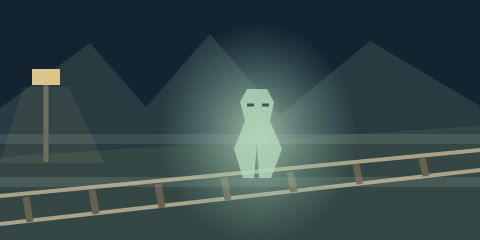

<!doctype html><html lang="pt-BR"><meta charset="utf-8"><meta name="viewport" content="width=device-width,initial-scale=1"><title>Frequência Zero — O trem das 03h17</title><style>*{box-sizing:border-box}body{margin:0;background:#101b23;color:#e4e9dc;font:16px system-ui}header,aside{padding:18px;background:#1b2a33}header{display:flex;justify-content:space-between;flex-wrap:wrap}main{display:grid;grid-template-columns:minmax(0,1fr) 320px}canvas{width:100%;background:#132b32;image-rendering:pixelated;touch-action:none}button{background:#31544e;color:white;border:1px solid #80a797;padding:10px;margin:3px;border-radius:5px;cursor:pointer}h1{margin:0;font-size:24px}small{color:#a6b9b5}#log{min-height:100px;white-space:pre-wrap}#clues{line-height:1.6} @media(max-width:800px){main{display:block}}aside{max-height:calc(100vh - 80px);overflow:auto;border-left:1px solid #435a60}header{border-bottom:2px solid #8a7955}#log{padding:12px;background:#101b23;border-left:3px solid #d7b879;line-height:1.5}button:hover{background:#486d60}button:focus-visible,input:focus-visible{outline:3px solid #efc779;outline-offset:2px}button:disabled{opacity:.45;cursor:not-allowed}#cases>div,#puzzle{background:#14252b;padding:10px;border:1px solid #405457;border-radius:8px}#puzzle:empty{display:none}#clues{max-height:190px;overflow:auto;font-size:14px}#controls{display:flex;flex-wrap:wrap;justify-content:center;padding:8px}#world{display:block}input:not([type=range]){max-width:100%;background:#101b23;border:1px solid #9db6aa;color:white;padding:10px}aside h3{font-size:15px;color:#d7b879;text-transform:uppercase;letter-spacing:1px}#hud{font-variant-numeric:tabular-nums} @media(max-width:800px){aside{max-height:none;border-left:0}button{min-height:44px}}#interior{position:relative;background:#17272c;padding:12px;border:1px solid #8a7955}#interior[hidden]{display:none}#roomart{width:100%;aspect-ratio:16/9;position:relative;background:linear-gradient(150deg,#4b453b,#211f20);overflow:hidden;border:4px solid #665441}#roomart button{position:absolute;transform:translate(-50%,-50%);min-width:80px;box-shadow:0 6px 0 #1118;background:#343e3c}#roomart button:hover{background:#8b7047}#roomart:before{content:'';position:absolute;inset:18% 5% 8%;background:repeating-linear-gradient(0deg,#766048 0 18px,#574738 19px 21px);transform:skewY(-5deg);opacity:.55}.keypad{display:grid;grid-template-columns:repeat(3,1fr);max-width:240px;margin:auto}.keypad button{font:20px monospace}.safe-display{display:block;letter-spacing:8px;text-align:center;background:#0a1719;padding:12px;color:#e5d29c}#roomart{background-size:100% 100%;background-position:center}#roomart:before{display:none}#roomart button{background:#17282ce8;border-color:#d1b879;font-size:13px}#world[hidden]{display:none}#controls button{min-width:44px}#compare button[aria-pressed=true]{background:#a38448;color:#101b23;border-color:#e9d3a0}#compare{max-height:180px;overflow:auto}#compare button{font-size:13px} .speaker{display:flex;align-items:center;gap:10px;padding:8px;border:1px solid #52665f;background:#14252b}.portrait{width:64px;height:64px;flex:none;background-image:url(assets/portraits.svg);background-size:192px 64px;image-rendering:pixelated}.speaker strong{color:#e4c789}#dialog button{display:block;width:100%;text-align:left;margin:5px 0}#weather{color:#b8c9c8;font-size:13px;margin-left:12px}#cinema[hidden]{display:none}#cinema{position:relative;background:#0d1920;border:1px solid #927951;padding:16px;text-align:center}#cinema img{width:100%;max-height:400px;object-fit:contain}#cinema p{max-width:650px;margin:16px auto;font-size:18px;line-height:1.5}#cinema button{min-width:150px}#weatherNotice{font-size:13px;color:#c4d7d0}.rain{color:#a9c5d4}#objective{margin:8px 12px;padding:9px 12px;border-left:3px solid #c1a469;background:#1b3035;color:#e7d9b7}#roomart button[data-seen=true]{border-color:#83a794;color:#c9e5d2}.dialrow{display:flex;gap:5px;justify-content:center;flex-wrap:wrap}.dialrow button{font:24px monospace;min-width:52px}.dialrow button:focus-visible{outline:3px solid #e0b66c}#cinema[hidden],#world[hidden],#interior[hidden]{display:none}#signalLab{border:1px solid #647d71;background:#102427;padding:10px;margin-top:8px}#signalLab[hidden]{display:none}#pulsegraph{display:flex;align-items:end;gap:4px;height:56px;padding:6px;background:#091b20;border:1px solid #3b6159}#pulsegraph span{width:5px;background:#8bc9a8;display:inline-block}#signalLab input{width:100%}#signalStatus{font-family:monospace;color:#b6e3ce}#signalLab button{font-size:13px}#skyLab[hidden]{display:none}#skyLab{background:#111e32;border:1px solid #526f80;padding:10px;margin-top:8px}#skygrid{display:grid;grid-template-columns:repeat(3,1fr);gap:4px;background:#0b1725;padding:6px}#skygrid button{min-height:52px;margin:0;background:#203447;font:14px monospace}#skygrid button[aria-pressed=true]{border-color:#e1cc8c;background:#425365}#skyLab p{font-size:13px;line-height:1.5}#npcJournal{display:grid;gap:8px;margin-top:8px}.npc-entry{border:1px solid #405759;padding:9px;background:#14252b;font-size:13px;line-height:1.5}.npc-entry p{margin:5px 0}.npc-entry strong{color:#d7b879}main{max-width:1600px;margin:auto}section{min-width:0}#controls{background:#14252b}#log{overflow-wrap:anywhere}#pulsegraph{overflow:hidden}#roomart button{max-width:38%;white-space:normal}button{overflow-wrap:anywhere}#world{max-height:70vh;object-fit:contain}@media(max-width:800px){#world{max-height:none}aside{padding:12px}#roomart button{font-size:11px;min-width:0;padding:5px}#controls button{font-size:13px}}#mapnav{display:flex;flex-wrap:wrap;align-items:center;gap:4px;padding:8px 12px;background:#15272d}#mapnav label{font-size:13px;color:#d3c5a2}#mapnav select,#clueFilter{background:#112127;color:#e4e9dc;border:1px solid #657c72;padding:8px;max-width:100%}#clues{max-height:320px}#clues article{padding:8px;border-bottom:1px solid #40575a}#clues article strong{display:block;color:#dec68e}#clues article small{display:block;font-size:11px;margin-bottom:4px}#events{font-size:13px;line-height:1.6}#routeStatus{font-size:12px;color:#b9cfc2}#mapnav[hidden]{display:none}#encounter[hidden]{display:none}#encounter{position:relative;background:#101c28;border:1px solid #827a65;padding:14px;margin:8px 0}#encounter h2{font-size:19px;color:#e0cb9c}#encounterArt{width:100%;max-height:220px;object-fit:contain;background:#101c28}#encounterActions{display:flex;flex-wrap:wrap;gap:3px}#encounterActions button{flex:1 1 140px}#encounterStats{font:13px monospace;color:#c6dfd1;line-height:1.7}#encounterTell{color:#e9c68e;line-height:1.5}#encounterLog{min-height:64px;color:#d5e2dc;line-height:1.5}#encounterStart[hidden]{display:none}#stealth[hidden],#stealthStart[hidden]{display:none}#stealth{background:#14232b;border:1px solid #736f5c;padding:12px;margin:8px 0}#stealth h2{color:#ddc798;font-size:19px}#stealthGrid{display:grid;grid-template-columns:repeat(7,minmax(0,1fr));gap:3px;max-width:560px;margin:10px auto}#stealthGrid button{height:44px;margin:0;padding:0;border-radius:2px;font-size:18px;min-width:0;background:#283e43;border-color:#526768}#stealthGrid button[data-type=wall]{background:#151c22;color:#758487}#stealthGrid button[data-type=cover]{background:#334c40}#stealthGrid button[data-type=visible]{background:#665743;color:#ffdc9b}#stealthGrid button[data-type=guard]{background:#71504d}#stealthGrid button[data-type=player]{background:#427b75;border-color:#e6ca86}#stealthGrid button[data-type=exit]{background:#384e5d}#stealthGrid button:disabled{opacity:1;cursor:default}#stealthActions{display:flex;flex-wrap:wrap;justify-content:center}#stealthInfo{font:13px monospace;color:#cae1d8}#stealthLog{line-height:1.5;min-height:48px}#stealthLegend{font-size:12px;color:#b7c8bf}</style><header><h1>FREQUÊNCIA ZERO <small> / Capítulo I: O trem das 03h17</small></h1><span><span id="hud"></span><span id="weather"></span></span></header><main><section><canvas id="world" width="960" height="620" aria-label="Mapa isométrico"></canvas><section id="interior" hidden aria-label="Interior investigável"><h2 id="roomtitle"></h2><div id="roomart"></div><button id="leave">Voltar à cidade</button></section><section id="cinema" hidden aria-label="Desfecho do capítulo"><h2 id="cinemaTitle"></h2><p id="cinemaText" aria-live="polite"></p><button id="cinemaNext">Continuar</button></section><section id="encounter" hidden aria-label="Encontro com o eco"><h2>O eco da plataforma</h2><p id="encounterStats"></p><p id="encounterTell"></p><p id="encounterLog" aria-live="polite"></p><div id="encounterActions"></div></section><button id="encounterStart" hidden>Investigar a silhueta na plataforma</button><section id="stealth" hidden aria-label="Infiltração no pátio"><h2>O pátio de serviço</h2><p id="stealthInfo"></p><div id="stealthGrid" aria-label="Mapa de furtividade por turnos"></div><p id="stealthLegend">● Você · ◆ Vigia · ▒ Cobertura · ░ Área observada · ▣ Registro · ↩ Saída · ■ Obstáculo</p><p id="stealthLog" aria-live="polite"></p><div id="stealthActions"></div></section><button id="stealthStart" hidden>Observar o pátio de serviço</button><div id="mapnav"><label for="destination">Destino</label><select id="destination"><option value="">Selecione um local</option></select><button id="routeGo">Caminhar até lá</button><button id="routeStop" disabled>Parar</button><span id="routeStatus" aria-live="polite"></span></div><div id="objective" aria-live="polite"></div><div id="controls"><button data-m="0,-1">↑</button><button data-m="-1,0">←</button><button data-m="1,0">→</button><button data-m="0,1">↓</button><button id="act">Investigar [E]</button><button id="wait">Esperar 1h</button><button id="night">Esperar até 03h17</button><button id="audio" aria-pressed="false">Som: desligado</button><button id="save">Salvar</button><button id="reset">Recomeçar</button></div><small>WASD ou setas • aproxime-se de um ponto marcado • E para interagir</small></section><aside><h2>Diário de campo</h2><p id="log" aria-live="polite"></p><h3>Evidências <span id="clueCount"></span></h3><label for="clueFilter">Filtrar diário</label> <select id="clueFilter"><option value="all">Todas</option><option value="physical">Objetos e registros</option><option value="statement">Depoimentos e rumores</option><option value="analysis">Análises e deduções</option></select><div id="clues"></div><h3>Mesa de investigação</h3><p>Selecione duas evidências para comparar.</p><div id="compare"></div><button id="combine">Comparar selecionadas</button><h3>Ocorrências da cidade</h3><div id='events'></div><p id='weatherNotice'></p><details><summary>Caderno dos moradores</summary><div id='schedule'></div><div id='npcJournal'></div></details><h3>Rádio portátil</h3><label>Frequência <input id='freq' type='range' min='80' max='110' step='0.1' value='90'></label><output id='freqout'>90.0</output><button id='tune'>Escutar</button><section id='signalLab' hidden><strong>Laboratório portátil de sinais</strong><p id='signalStatus'></p><div id='pulsegraph' role='img' aria-label='Grupos de pulsos separados por intervalos'></div><p id='pulseCounts'></p><label for='signalAnswer'>Próximo grupo previsto</label><input id='signalAnswer' inputmode='numeric' autocomplete='off' maxlength='2'><button id='signalCheck'>Testar previsão</button><button id='signalHint'>Consultar anotações</button><p id='signalFeedback' aria-live='polite'></p></section><section id='skyLab' hidden><h3>Mapa celeste • caderno do tio</h3><p>Três observações independentes. Escolha o setor que pertence às três faixas de detecção.</p><p id='skyReadings'></p><div id='skygrid'></div><button id='skyConfirm'>Cruzar observações</button><p id='skyFeedback' aria-live='polite'></p></section><h3>Objetos e enigmas</h3><div id="puzzle"></div><h3>Conversas</h3><div id="dialog"></div><h3>Casos em aberto</h3><div id="cases"></div><h3>Hipóteses</h3><button id="link">Revisar objetivo</button><button id="final">Investigar o trem</button><p id="theory"></p></aside></main><script>
'use strict';
const $=id=>document.getElementById(id),c=$('world'),g=c.getContext('2d');
const sites=[{x:3,y:3,name:'Casa do tio',type:'house',id:'radio',text:'Uma fita registra uma transmissão às 03:17. Na etiqueta: 103,7 MHz. O tio anotou: não é uma invasão, é um aviso.'},{x:8,y:3,name:'Clínica',type:'house',id:'clinic',text:'A médica Lia revela que os lapsos de memória coincidem com os pulsos do observatório.'},{x:3,y:9,name:'Arquivo municipal',type:'house',id:'file',text:'O Projeto Horizonte pretende amplificar o sinal no trigésimo dia. A ordem tem assinatura governamental.'},{x:10,y:9,name:'Observatório',type:'tower',id:'signal',text:'O espectrograma mostra duas frequências: uma de sincronização e outra que pode interrompê-la.'},{x:11,y:4,name:'Posto de vigilância',type:'house',id:'guard',text:'O agente Raul admite que o projeto foi infiltrado. Ele teme tanto os superiores quanto o sinal.'}];
sites.push(...[{"x":1,"y":6,"name":"Estação","type":"house","id":"rail","text":"Os trilhos têm riscos recentes. A placa diz: desativada em 1978."},{"x":12,"y":12,"name":"Lago","type":"tower","id":"lake","text":"O pescador anotou: luzes verdes após cada apagão; um ruído metálico vem da água."},{"x":7,"y":11,"name":"Rádio comunitária","type":"house","id":"future","text":"Uma gravação anuncia chuva amanhã e cita um acidente ainda não ocorrido."},{"x":1,"y":11,"name":"Fotógrafo","type":"house","id":"photo","text":"Uma fotografia de 1958 mostra uma menina idêntica à que aparece na praça hoje."},{"x":12,"y":1,"name":"Casa interditada","type":"house","id":"room","text":"A planta indica um cômodo atrás da parede norte. A parede tem sinais de reforma."}]);
const cases=[
{id:'train',title:'O trem das 03h17',need:['rail','radio','witness'],question:'O que os indícios demonstram?',options:['A ferrovia pode estar ativa clandestinamente.','O trem é certamente extraterrestre.','Nada acontece nos trilhos.'],answer:0,hint:'Compare o horário da fita com os sinais físicos e o testemunho.',result:'A ferrovia merece vigilância; sua origem ainda não está comprovada.'},
{id:'patient',title:'O paciente 47',need:['clinic','patient','file'],question:'Qual hipótese é sustentada pelos registros?',options:['Todos os médicos são extraterrestres.','Há tratamento omitido dos registros públicos.','O paciente nunca existiu.'],answer:1,hint:'Uma prescrição e um registro ausente podem coexistir.',result:'Há uma ocultação administrativa ligada ao projeto.'},
{id:'lakecase',title:'As luzes do lago',need:['lake','signal','outage'],question:'Qual relação deve ser investigada?',options:['O lago é uma nave, sem dúvida.','O pescador inventou tudo.','Os pulsos e as falhas elétricas parecem relacionados.'],answer:2,hint:'Compare os horários, não a aparência das luzes.',result:'Existe correlação temporal; a causa física ainda é desconhecida.'}];
const notes={witness:'Raul: ouvi um trem às 03h17. Não vi o maquinista.',patient:'Lia: a farmácia recebe prescrições para o paciente 47; o cadastro foi removido.',outage:'Rádio: o livro de ocorrências lista apagões às mesmas horas dos pulsos.'};
sites.push({x:6,y:1,name:'Praça',type:'house',id:'medal',text:'Uma menina usa um medalhão com a inscrição E. Moura, 1958.'},{x:9,y:12,name:'Subestação',type:'tower',id:'meter',text:'O medidor registra pulsos mesmo com a alimentação desligada.'},{x:0,y:3,name:'Jornal',type:'house',id:'news',text:'A edição de 14 de agosto foi substituída por uma folha em branco.'});
Object.assign(notes,{family:'Registro familiar: Elisa Moura, nascida em 1950, e sua neta homônima, nascida em 1990.',survey:'A medição externa confirma um espaço de dois metros atrás da parede.',permit:'Alvará de 1981: abrigo antiaéreo desativado, acesso pela casa.',calendar:'Calendário da clínica: 14 de agosto, todos os atendimentos cancelados.',clock:'O relógio mecânico da rádio continuou funcionando durante o dia perdido.',cargo:'Manifesto ferroviário: remessa lacrada H-17, destino observatório.',prediction:'O jornal registrou a previsão da rádio antes de uma queda de energia.',duplicate:'Dois documentos têm o mesmo número, mas fotos e datas distintas.',protection:'Raul confirma a existência de um programa de proteção de testemunhas.',phase:'A segunda onda apresenta fase oposta à primeira.',warning:'Mensagem decodificada: não amplifiquem. A janela fecha no dia 30.'});
cases.push(
{id:'girl',title:'A menina que não envelhece',need:['photo','medal','family'],question:'Qual explicação é sustentada?',options:['Imortalidade comprovada.','Duas gerações compartilham nome e medalhão.','A fotografia foi necessariamente falsificada.'],answer:1,hint:'Compare datas de nascimento e objetos herdados.',result:'O mistério familiar não prova uma origem extraterrestre.'},
{id:'house',title:'A casa impossível',need:['room','survey','permit'],question:'O que existe atrás da parede?',options:['Um espaço compatível com um abrigo antigo.','Um portal dimensional comprovado.','Nenhum espaço.'],answer:0,hint:'Compare a planta, as dimensões e o alvará.',result:'O abrigo antigo pode servir de acesso clandestino.'},
{id:'lost',title:'O dia perdido',need:['news','calendar','clock'],question:'Qual afirmação é defensável?',options:['O tempo parou no planeta.','Todos mentem.','Houve uma lacuna de registros, não prova de tempo parado.'],answer:2,hint:'Um relógio independente continuou funcionando.',result:'A lacuna exige investigação de memória e registros.'},
{id:'broadcast',title:'A estação fantasma',need:['future','prediction','clock'],question:'O que merece teste controlado?',options:['A rádio possui informação antecipada de alguns eventos.','Toda previsão é verdadeira.','Não há gravações.'],answer:0,hint:'Compare registros feitos antes e depois do evento.',result:'A antecipação é verificável, mas sua origem continua aberta.'},
{id:'identity',title:'O homem de duas vidas',need:['duplicate','protection','file'],question:'Qual explicação tem apoio documental?',options:['Clonagem comprovada.','Uso de identidades administrativas de cobertura.','Os documentos não existem.'],answer:1,hint:'Separe identidade legal de identidade biológica.',result:'A cobertura governamental explica a duplicação.'},
{id:'horizon',title:'Projeto Horizonte',need:['cargo','file','signal'],question:'O que conecta os locais?',options:['Uma coincidência sem evidências.','Uma invasão comprovada.','Uma cadeia de transporte e amplificação clandestina.'],answer:2,hint:'Siga o destino da remessa e a ordem assinada.',result:'A infraestrutura do projeto está demonstrada.'},
{id:'zero',title:'Frequência Zero',need:['phase','warning','signal'],question:'Qual ação tem fundamento?',options:['Testar a onda em oposição antes de amplificar.','Amplificar ambas indiscriminadamente.','Ignorar o aviso.'],answer:0,hint:'Ondas opostas podem cancelar uma componente do sinal.',result:'Uma contramedida fundamentada está disponível.'});
const sliceIds=['radio','clinic','rail','guard','future'];sites.splice(0,sites.length,...sites.filter(a=>sliceIds.includes(a.id)));cases.splice(0,cases.length,...cases.filter(k=>k.id==='train'));const fresh=()=>({x:5,y:5,t:480,clues:[],theory:false,end:null,trust:0,relations:{},solved:[],attempts:{},events:[],journal:{},tuned:false,puzzles:[],puzzleHints:{},room:null,inspected:[],connections:[],phenomena:[],endingScene:0,cinemaDismissed:false,signalAttempts:0,signalHints:0,skyAttempts:0,npcEvents:{},npcKnown:[],npcMeetings:[],decisions:{},worldFlags:{},consequences:[],fates:{},worldClock:480,social:{},rumors:{},socialEvents:[],testimonies:{},confrontations:{},encounter:null,encounterOutcome:null,encounterHistory:[],personalPromise:null,stealthRun:null,stealthOutcome:null,stealthHistory:[]});let s=fresh();$('dialog').replaceChildren();try{const a=JSON.parse(localStorage.getItem('fz-demo-v2'));if(a&&Number.isFinite(a.x)&&Number.isFinite(a.y)&&Number.isFinite(a.t)&&Array.isArray(a.clues)&&a.x>=0&&a.x<14&&a.y>=0&&a.y<14)s=a}catch{}
s.relations??={};s.solved??=[];s.attempts??={};s.events??=[];s.journal??={};s.tuned??=false;s.puzzles??=[];s.puzzleHints??={};s.room=null;s.inspected??=[];s.connections??=[];s.phenomena??=[];s.endingScene??=0;s.cinemaDismissed??=false;s.signalAttempts??=0;s.signalHints??=0;s.skyAttempts??=0;s.npcEvents??={};s.npcKnown??=[];s.npcMeetings??=[];s.decisions??={};s.worldFlags??={};s.consequences??=[];s.fates??={};s.worldClock??=480;s.social??={};s.rumors??={};s.socialEvents??=[];s.testimonies??={};s.confrontations??={};s.encounter??=null;s.encounterOutcome??=null;s.encounterHistory??=[];s.personalPromise??=null;s.stealthRun??=null;s.stealthOutcome??=null;s.stealthHistory??=[];let skySelected=null;let selectedClues=[];
let audio=null,ambient=null,ambientGain=null,secondAmbient=null,secondGain=null;let motifAt=-Infinity;function motif(){if(!audio||audio.currentTime-motifAt<4)return;motifAt=audio.currentTime;const base=hour()>=19||hour()<6?110:146.83;[0,7,3,10].forEach((n,i)=>{const o=audio.createOscillator(),v=audio.createGain(),at=audio.currentTime+i*.22;o.type='sine';o.frequency.value=base*Math.pow(2,n/12);v.gain.setValueAtTime(.001,at);v.gain.linearRampToValueAtTime(.016,at+.06);v.gain.exponentialRampToValueAtTime(.001,at+.72);o.connect(v);v.connect(audio.destination);o.start(at);o.stop(at+.75)})}function soundscape(){if(!audio||!ambient)return;const night=hour()>=19||hour()<6;const storm=weather()==='Chuva';ambient.frequency.setTargetAtTime(night?48:65,audio.currentTime,.5);ambientGain.gain.setTargetAtTime(storm?.018:.009,audio.currentTime,.5);secondAmbient.frequency.setTargetAtTime(night?72:98,audio.currentTime,.5);secondGain.gain.setTargetAtTime(night?.009:.003,audio.currentTime,.5)}function tone(freq=440,seconds=.12){if(!audio)return;const o=audio.createOscillator(),v=audio.createGain();o.type='sine';o.frequency.value=freq;v.gain.setValueAtTime(.045,audio.currentTime);v.gain.exponentialRampToValueAtTime(.001,audio.currentTime+seconds);o.connect(v);v.connect(audio.destination);o.start();o.stop(audio.currentTime+seconds)}$('audio').onclick=async()=>{if(audio){await audio.close();audio=null;ambient=null;ambientGain=null;secondAmbient=null;secondGain=null;$('audio').textContent='Som: desligado';$('audio').setAttribute('aria-pressed','false');return}try{const AC=window.AudioContext||window.webkitAudioContext;audio=new AC();motifAt=-Infinity;await audio.resume();const o=audio.createOscillator(),v=audio.createGain();o.frequency.value=55;v.gain.value=.012;o.connect(v);v.connect(audio.destination);o.start();ambient=o;ambientGain=v;secondAmbient=audio.createOscillator();secondGain=audio.createGain();secondAmbient.type='triangle';secondGain.gain.value=.003;secondAmbient.connect(secondGain);secondGain.connect(audio.destination);secondAmbient.start();soundscape();$('audio').textContent='Som: ligado';$('audio').setAttribute('aria-pressed','true');tone(330)}catch{audio=null;say('Áudio indisponível neste navegador.')}};const say=t=>{$('log').textContent=t};const day=()=>1+Math.floor(s.t/1440),hour=()=>Math.floor(s.t%1440/60);
Object.assign(notes,{safe:'Carta lacrada: a remessa H-17 chega pela ferrovia; procure a estação às 03h17.',power:'Painel restaurado: os pulsos persistem sem energia externa.',cipher:'Bilhete decifrado: NÃO AMPLIFIQUE.',door:'O abrigo contém uma planta da infraestrutura Horizonte.',sequence:'Registro do ensaio: a onda inversa deve ser testada antes de ativar o emissor.'});
function weather(){const m=s.t%1440,d=day();if(m>=120&&m<360)return 'Neblina';if((d%3===2&&m>=720&&m<1380)||(d===1&&m>=1020&&m<1260))return 'Chuva';return 'Tempo aberto'}
const anomalies=[{id:'lights',at:1020,text:'Por um instante, as lâmpadas da rua ficaram verdes.'},{id:'static',at:1260,text:'Todos os rádios da cidade emitiram o mesmo ruído.'},{id:'whistle',at:1637,text:'Um apito distante atravessou a neblina da madrugada.'}];
Object.assign(notes,{primepattern:'Análise: grupos de 2, 3, 5, 7 e 11 pulsos; o próximo grupo observado foi 13. A sequência de primos favorece a hipótese de um sinal estruturado, mas não prova origem extraterrestre.',localtest:'Nora desligou o transmissor local durante a gravação. O sinal persistiu no receptor independente.',skylog:'O tio anotou que o sinal reaparece quando a antena aponta para a mesma região do céu. A origem ainda precisa de triangulação.'});
Object.assign(notes,{skysector:'As três faixas de detecção se cruzam no setor B2 do mapa fictício do tio. A direção aparente é consistente; ainda não há medição de distância.',contacthypothesis:'Hipótese científica: o padrão previsto, a persistência sem transmissor local e a direção aparente consistente justificam investigação independente. Ainda não demonstram origem extraterrestre.'});
const skyBands=[['A2','B2','C2'],['B1','B2','B3'],['A1','B2','C3']];
function skyPanel(){const el=$('skyLab');el.hidden=!s.clues.includes('skylog');if(el.hidden)return;$('skyReadings').textContent='Registro 1: '+skyBands[0].join(' / ')+' | Registro 2: '+skyBands[1].join(' / ')+' | Registro 3: '+skyBands[2].join(' / ');const grid=$('skygrid');grid.replaceChildren();for(const row of ['A','B','C'])for(const col of [1,2,3]){const id=row+col,b=document.createElement('button');b.textContent=id+' · ✦';b.setAttribute('aria-label','Setor '+id);b.setAttribute('aria-pressed',String(skySelected===id));b.disabled=!!s.end||s.clues.includes('skysector');b.onclick=()=>{skySelected=id;skyPanel()};grid.append(b)}$('skyConfirm').disabled=!skySelected||!!s.end||s.clues.includes('skysector');if(s.clues.includes('skysector'))$('skyFeedback').textContent='Direção aparente registrada. Distância e origem ainda indeterminadas.'}
$('skyConfirm').onclick=()=>{if(s.end||!s.clues.includes('skylog')||!skySelected||s.clues.includes('skysector'))return;s.skyAttempts++;if(!skyBands.every(b=>b.includes(skySelected))){$('skyFeedback').textContent='O setor não pertence às três faixas. Compare os registros.';return}record('skysector');say(notes.skysector);render()};
const pulseGroups=[2,3,5,7,11];
function signalPanel(){const el=$('signalLab');el.hidden=!s.clues.includes('warning');if(el.hidden)return;$('signalStatus').textContent=s.clues.includes('primepattern')?'PREVISÃO CONFIRMADA · ORIGEM INDETERMINADA':'CAPTURA 103,7 MHz · PORTADORA ESTÁVEL';const graph=$('pulsegraph');graph.replaceChildren();for(const n of pulseGroups){for(let i=0;i<n;i++){const bar=document.createElement('span');bar.style.height=(i%2?26:38)+'px';graph.append(bar)}const gap=document.createElement('span');gap.style.background='transparent';gap.style.width='8px';graph.append(gap)}$('pulseCounts').textContent='Contagem dos grupos: '+pulseGroups.join(' · ')+' · ?';$('signalCheck').disabled=!!s.end||s.clues.includes('primepattern');$('signalHint').disabled=!!s.end||s.clues.includes('primepattern');if(s.clues.includes('primepattern'))$('signalFeedback').textContent='A gravação seguinte confirmou a previsão. A origem permanece desconhecida.'}
$('signalCheck').onclick=()=>{if(s.end||!s.clues.includes('warning')||s.clues.includes('primepattern'))return;s.signalAttempts++;const v=$('signalAnswer').value.trim();if(v!=='13'){$('signalFeedback').textContent='A previsão não coincide com a próxima captura. Revise a regularidade dos grupos.';return}record('primepattern');tone(520,.3);say(notes.primepattern);render()};
$('signalHint').onclick=()=>{if(s.end||!s.clues.includes('warning'))return;s.signalHints++;$('signalFeedback').textContent=s.signalHints===1?'O tio escreveu: procure números divisíveis apenas por 1 e por eles mesmos.':'Depois de 11, procure o próximo número com essa propriedade.'};
const timeline=[[2,'Uma queda de energia interrompe a rádio.'],[6,'O jornal anuncia um desaparecimento.'],[13,'Veículos oficiais chegam à cidade.'],[21,'O lago emite luz durante a noite.'],[28,'O observatório transmite continuamente.']];
function record(id){if(!s.clues.includes(id)){s.clues.push(id);tone(660,.23);if(['primepattern','skysector','contacthypothesis','warning'].includes(id))motif()}s.journal[id]??={day:day(),hour:hour()}}
function advance(n){const before=s.t;s.t+=n;for(const a of anomalies){if(before<a.at&&s.t>=a.at&&!s.phenomena.includes(a.id)){s.phenomena.push(a.id);s.events.push(a.text);tone(82,.4);motif()}}resolveWorld();tickNpcEvents();soundscape();for(const [d,msg] of timeline)if(day()>=d&&!s.events.includes(msg))s.events.push(msg);if(day()>30&&!s.end){s.end='O pulso foi ativado. Vale do Cedro perdeu contato com o mundo.';say(s.end)}}
const encounterNotes={echoTrace:'Fragmento ressonante recuperado na plataforma. A figura não se comportou como um organismo comum.',echoMessage:'A figura reagiu à portadora da fita e transmitiu: “Não amplifique.” Não há certeza sobre sua intenção.',echoShock:'Registro do encontro hostil: o eco se desfez sob sobrecarga, deixando um fragmento instável.',echoLoss:'O protagonista escapou sem recuperar o fragmento; alguém poderá investigar os vestígios posteriormente.'};Object.assign(notes,encounterNotes);
const stealthMap=['.......','.##.C..','...C...','.C.#.C.','...#...','E.C...D'];const patrol=[[5,1],[5,2],[4,2],[4,1]];const dirs=[[0,1],[-1,0],[0,-1],[1,0]];
Object.assign(notes,{yardRecord:'Registro do pátio: o relógio do turno foi corrigido manualmente para coincidir com a transmissão. O responsável anotou que o procedimento não era autorizado.',yardObserved:'A ronda do pátio se repete em quatro posições. Há intervalos sem observação; um relato não prova a origem do fenômeno.',yardCaught:'A vigilância identificou uma presença na área de serviço e reforçou a ronda.'});
function stealthAvailable(){return !s.end&&!s.room&&!s.encounter&&!s.stealthRun&&!s.stealthOutcome&&nearPlatform()&&s.clues.includes('rail')}
function stealthTile(x,y){return stealthMap[y]?.[x]||'#'}
function patrolState(run){const i=run.turn%patrol.length;return {x:patrol[i][0],y:patrol[i][1],dx:dirs[i][0],dy:dirs[i][1]}}
function sightCells(run){const g=patrolState(run),result=[];for(let i=1;i<=3;i++){const x=g.x+g.dx*i,y=g.y+g.dy*i;if(stealthTile(x,y)==='#')break;result.push([x,y])}return result}
function beginStealth(){if(!stealthAvailable())return;stopRoute();s.stealthRun={x:0,y:5,turn:0,alert:0,crouch:true,document:false,observed:false,log:'Um vigia repete a ronda. Observe o ritmo e alcance o registro; volte pela saída para conservar a prova.'};render()}
function endStealth(outcome){const q=s.stealthRun;if(!q)return;s.stealthHistory.push({outcome,at:s.t,turns:q.turn});s.stealthOutcome=outcome;s.stealthRun=null;if(outcome==='success'){record('yardRecord');say('Você voltou com o registro sem provocar um incidente.')}else if(outcome==='caught'){record('yardCaught');s.worldFlags.yardAlert=true;consequence('yard:alert','A vigilância reforçou a ronda no posto.');advance(20);say('O vigia o reconheceu. Você voltou à estação sem o registro.')}else say('Você deixou o pátio. A investigação principal continua.');render()}
function stealthAction(action,dx=0,dy=0){const q=s.stealthRun;if(!q||s.end)return;if(action==='leave'){endStealth('retreat');return}if(action==='stance'){q.crouch=!q.crouch;q.log=q.crouch?'Você se abaixa.':'Você se levanta.';render();return}if(action==='observe'){q.observed=true;record('yardObserved');q.log='O vigia muda de posição a cada ação. A área dourada mostra sua linha de visão atual.';render();return}if(action==='move'){if(Math.abs(dx)+Math.abs(dy)!==1)return;const nx=q.x+dx,ny=q.y+dy;if(stealthTile(nx,ny)==='#'){q.log='O caminho está bloqueado.';render();return}q.x=nx;q.y=ny}else if(action!=='wait')return;
const oldSight=sightCells(q);const oldGuard=patrolState(q);q.turn++;const guard=patrolState(q);const seen=[...oldSight,...sightCells(q)].some(([x,y])=>x===q.x&&y===q.y);const close=Math.abs(guard.x-q.x)+Math.abs(guard.y-q.y)<=1||Math.abs(oldGuard.x-q.x)+Math.abs(oldGuard.y-q.y)<=1;const cover=stealthTile(q.x,q.y)==='C';const occupied=(guard.x===q.x&&guard.y===q.y)||(oldGuard.x===q.x&&oldGuard.y===q.y);if(occupied||(!cover&&(seen||(!q.crouch&&close)))){q.alert=Math.min(2,q.alert+1);q.log='O vigia percebeu movimento. Procure cobertura.'}else{q.alert=Math.max(0,q.alert-1);q.log=cover?'A cobertura esconde sua silhueta.':'Você passa despercebido.'}advance(q.crouch?5:3);if(q.alert>=2){endStealth('caught');return}if(stealthTile(q.x,q.y)==='D'&&!q.document){q.document=true;q.log='Você encontrou o registro. Volte à saída para preservá-lo.'}if(stealthTile(q.x,q.y)==='E'&&q.document){endStealth('success');return}render()}
function stealthPanel(){const q=s.end?null:s.stealthRun;$('stealthStart').hidden=!stealthAvailable();$('stealth').hidden=!q;if(!q)return;const g=patrolState(q),sight=sightCells(q);$('stealthInfo').textContent='Atenção '+q.alert+'/2 · '+(q.crouch?'Agachado':'Em pé')+' · '+(q.document?'Retorne à saída':'Localize o registro');$('stealthLog').textContent=q.log;const el=$('stealthGrid');el.replaceChildren();for(let y=0;y<6;y++)for(let x=0;x<7;x++){const b=document.createElement('button'),tile=stealthTile(x,y),player=x===q.x&&y===q.y,guard=x===g.x&&y===g.y,visible=sight.some(([a,c])=>a===x&&c===y);let type=player?'player':guard?'guard':tile==='#'?'wall':tile==='C'?'cover':visible?'visible':tile==='E'?'exit':'ground';b.dataset.type=type;b.textContent=player?'●':guard?'◆':tile==='#'?'■':tile==='C'?'▒':tile==='D'&&!q.document?'▣':tile==='E'?'↩':visible?'░':'·';b.setAttribute('aria-label','Coluna '+(x+1)+', linha '+(y+1)+': '+({player:'Você',guard:'Vigia',wall:'Obstáculo',cover:'Cobertura',visible:'Área observada',exit:'Saída',ground:tile==='D'?'Registro':'Caminho'})[type]);b.disabled=Math.abs(q.x-x)+Math.abs(q.y-y)!==1||tile==='#';b.onclick=()=>stealthAction('move',x-q.x,y-q.y);el.append(b)}const actions=$('stealthActions');actions.replaceChildren();for(const [id,label] of [['observe','Observar ronda'],['wait','Esperar um turno'],['stance',q.crouch?'Levantar':'Agachar'],['leave','Abandonar pátio']]){const b=document.createElement('button');b.textContent=label;b.onclick=()=>stealthAction(id);actions.append(b)}}
function nearPlatform(){return Math.abs(s.x-1)+Math.abs(s.y-6)<=1}
function encounterAvailable(){return !s.end&&!s.room&&!s.encounter&&!s.stealthRun&&!s.encounterOutcome&&nearPlatform()&&s.clues.includes('rail')&&s.clues.includes('radio')}
function beginEncounter(){if(!encounterAvailable())return;stopRoute();s.encounter={turn:0,focus:3,stamina:3,alert:0,progress:0,integrity:3,observed:false,log:'A silhueta olha para um ponto vazio da plataforma. O ar vibra, mas ela ainda não reagiu.'};render()}
function encounterTell(e){return e.alert===0?'A figura parece procurar a origem de um som.':e.alert===1?'O eco se voltou para você. A luz oscila.':e.turn%2===0?'A figura se contrai. Um pulso intenso se aproxima — prepare-se ou recue.':'A luz diminui: o eco está vulnerável por um instante.'}
function endEncounter(outcome){const e=s.encounter;if(!e)return;s.encounterHistory.push({outcome,at:s.t,turns:e.turn});s.encounterOutcome=outcome;s.encounter=null;const messages={stealth:'Você deixa a plataforma sem ser percebido. Um fragmento vibra no bolso.',contact:'O eco responde com uma advertência e desaparece, sem atacar.',combat:'A figura se dispersa. Você recupera um fragmento instável, mas o ruído chamou atenção.',retreat:'Você recua. A silhueta desaparece na neblina.',injured:'O pulso o derruba. Você consegue sair da plataforma, abalado.'};if(outcome==='stealth'||outcome==='contact'||outcome==='combat')record('echoTrace');if(outcome==='contact')record('echoMessage');if(outcome==='combat'){record('echoShock');s.worldFlags.echoDisturbed=true;consequence('echo:noise','O clarão na estação despertou a atenção de Raul.')}if(outcome==='retreat'||outcome==='injured')record('echoLoss');if(outcome==='injured'){advance(45);s.worldFlags.echoInjury=true}say(messages[outcome]);render()}
function encounterAction(action){const e=s.encounter;if(!e||s.end)return;const threat=e.alert>=2&&e.turn%2===0;let defended=false;let message='';if(action==='retreat'){endEncounter('retreat');return}
if(action==='observe'){e.observed=true;e.focus=Math.min(3,e.focus+1);message='O ritmo da luz coincide com os pulsos da fita. Há intervalos de silêncio.'}
else if(action==='sneak'){if(e.alert>=2){message='A figura acompanha seu movimento. É preciso recuperar a distância.';e.alert=1;defended=true}else{e.progress+=1;message='Você avança durante um intervalo de silêncio.';if(!e.observed)e.alert=Math.min(2,e.alert+1)}}
else if(action==='listen'){if(!e.observed||!s.clues.includes('warning'))return;message='Você reproduz a portadora já registrada. A figura interrompe o pulso.';e.turn++;advance(4);endEncounter('contact');return}
else if(action==='guard'){e.stamina=Math.min(3,e.stamina+1);defended=true;message='Você se prepara para a onda e recupera o equilíbrio.'}
else if(action==='pulse'){if(e.stamina<1)return;e.stamina--;e.alert=2;if(threat){message='A descarga do aparelho se perde na onda do eco.'}else{e.integrity--;message='A descarga de contrafase dispersa parte da silhueta.'}}
else return;
e.turn++;if(threat&&!defended){e.focus--;message+=' O pulso o atinge.'}e.log=message;advance(4);if(e.focus<=0){endEncounter('injured');return}if(e.integrity<=0){endEncounter('combat');return}if(e.progress>=3){endEncounter('stealth');return}render()}
function encounterPanel(){const e=s.end?null:s.encounter;$('encounterStart').hidden=!encounterAvailable();$('encounter').hidden=!e;if(!e)return;$('encounterStats').textContent='Fôlego '+e.stamina+'/3 · Equilíbrio '+e.focus+'/3 · Atenção '+e.alert+'/2 · Travessia '+e.progress+'/3';$('encounterTell').textContent=encounterTell(e);$('encounterLog').textContent=e.log;const el=$('encounterActions');el.replaceChildren();for(const [id,label,disabled] of [['observe','Observar o padrão',false],['sneak','Avançar em silêncio',false],['listen','Reproduzir o sinal da fita',!e.observed||!s.clues.includes('warning')],['guard','Preparar-se para o pulso',false],['pulse','Ativar contrafase',e.stamina<1],['retreat','Recuar',false]]){const b=document.createElement('button');b.textContent=label;b.disabled=disabled;b.onclick=()=>encounterAction(id);el.append(b)}}
function walkable(x,y){return x>=0&&y>=0&&x<14&&y<14&&!(x>10&&y>8)&&!sites.some(a=>a.x===x&&a.y===y)}
function planRoute(x,y,tx,ty){const queue=[{x,y,path:[]}],seen=new Set([x+','+y]);for(let i=0;i<queue.length;i++){const a=queue[i];if(Math.abs(a.x-tx)+Math.abs(a.y-ty)<=1)return a.path;for(const [dx,dy] of [[1,0],[-1,0],[0,1],[0,-1]]){const nx=a.x+dx,ny=a.y+dy,key=nx+','+ny;if(!walkable(nx,ny)||seen.has(key))continue;seen.add(key);queue.push({x:nx,y:ny,path:[...a.path,[dx,dy]]})}}return null}
let routeTimer=null,routePath=[];function stopRoute(message=''){if(routeTimer!==null&&typeof clearTimeout==='function')clearTimeout(routeTimer);routeTimer=null;routePath=[];$('routeStop').disabled=true;$('routeStatus').textContent=message}
function startRoute(id){stopRoute();if(s.end||s.room||s.encounter||s.stealthRun)return;const dest=sites.find(a=>a.id===id);if(!dest)return;const path=planRoute(s.x,s.y,dest.x,dest.y);if(!path){stopRoute('Não existe caminho disponível.');return}routePath=path;$('routeStop').disabled=false;const tick=()=>{if(s.end||s.room||s.encounter||s.stealthRun){stopRoute();return}if(!routePath.length){stopRoute('Chegou: '+dest.name+'. Pressione E para investigar.');return}const [dx,dy]=routePath.shift();move(dx,dy,true);$('routeStatus').textContent=dest.name+' · '+routePath.length+' passos restantes';if(typeof setTimeout==='function')routeTimer=setTimeout(tick,155);else tick()};tick()}
function move(dx,dy,auto=false){if(!auto)stopRoute();if(s.end||s.room||s.encounter||s.stealthRun)return;let x=s.x+dx,y=s.y+dy;if(!walkable(x,y))return;const from=visual||[s.x,s.y];s.x=x;s.y=y;facing=dx-dy>=0?1:-1;step++;tone(105,.045);animateMove(from,[x,y]);$('dialog').replaceChildren();$('puzzle').replaceChildren();advance(8);render()}
function interact(){stopRoute();if(s.end||s.room||s.encounter||s.stealthRun)return;let npc=nearbyNpc();let site=sites.find(a=>Math.abs(a.x-s.x)+Math.abs(a.y-s.y)<=1);let a=(npc&&(!site||s.clues.includes(site.id)))?{...sites.find(z=>z.id===npc.id),x:npc.x,y:npc.y}:site;if(!a){say('Aproxime-se de um edifício marcado.');return}if(a.id==='guard'&&a.x===11&&a.y===4&&(hour()<18&&hour()>5)){say('Raul só fala depois das 18h.');return}if(a.id==='clinic'&&a.x===8&&a.y===3&&(hour()<8||hour()>=18)){say('A clínica funciona das 08h às 18h.');return}if(a.id==='radio'||a.id==='rail'){openRoom(a);return}if(personalStories[a.id]&&!npcReachable(a.id)){say(a.name+' — o morador não está aqui neste horário. Consulte o caderno ou procure pela cidade.');return}if(!s.clues.includes(a.id)){record(a.id);advance(20)}say(a.text);if(a.id==='rail'&&hour()===3){record('cargo');say(a.text+' Um manifesto de carga caiu junto aos trilhos.')}dialog(a);puzzle(a);render()}
function dialog(a){const el=$('dialog');el.replaceChildren();const who=({clinic:['Lia',0],guard:['Raul',1],future:['Nora',2]})[a.id];if(who){const banner=document.createElement('div');banner.className='speaker';const pic=document.createElement('div');pic.className='portrait';pic.style.backgroundPosition=(-64*who[1])+'px 0';pic.setAttribute('aria-hidden','true');const name=document.createElement('strong');name.textContent=who[0];banner.append(pic,name);el.append(banner)}const lines={
clinic:[['Perguntar com discrição','Lia: Ele chegou aqui com uma queimadura na mão, mas não quis que eu anotasse o nome. Quando perguntei o motivo, disse que o papel sobreviveria a nós dois.',1],['Mostrar a fita do tio','Lia: Reconheço essa voz. Naquela noite, seu tio pediu que eu não deixasse o paciente 47 sozinho. Às três e dezessete, todos os monitores ficaram em silêncio.',1,'patient','radio'],['Acusar a clínica','Lia: Sem provas, não temos mais nada a conversar.',-1],['Pedir desculpas','Lia: Tudo bem. Também quero descobrir o que aconteceu.',1]],
guard:[['Ouvir sem pressionar','Raul: Meu trabalho era contar vagões. Na primeira noite contei seis. Na segunda, cinco. No relatório, mandaram escrever zero. Entende por que não gosto de perguntas?',1],['Perguntar sobre a ferrovia','Raul: Às três e dezessete ouvi o apito. O estranho é que a locomotiva não tinha faróis. Não vi o maquinista. Se for até lá, fique na plataforma.',1,'witness','rail'],['Mostrar documentos duplicados','Raul: São identidades de proteção.',1,'protection','duplicate']],
future:[['Pedir o livro de ocorrências','Nora: Guardei as fitas porque achei que estava enlouquecendo. Uma voz leu a previsão de amanhã, e depois pediu desculpas por algo que ainda não tinha acontecido.',1,'outage'],['Comparar o registro de som com a fita','Nora: Aqui está o registro do apito, às três e dezessete. Gravei antes de conhecer seu tio.',1,'altwitness','radio'],['O sinal pode ser uma transmissão local?','Nora: Desliguei meu transmissor. O receptor independente continuou contando os pulsos. Não sei de onde vêm, mas não saíram daqui.',1,'localtest','warning'],['Perguntar sobre as anotações astronômicas','Nora: Seu tio voltava sempre à mesma região do céu. Dizia que uma coincidência não era prova, mas uma previsão repetida merecia atenção.',1,'skylog','primepattern']],
photo:[['Perguntar sobre a menina','Fotógrafo: Pode ser uma parente. Mas o medalhão é o mesmo.',1]],
room:[['Medir a parede','A medida revela um espaço oculto.',0,'survey']],
medal:[['Conversar com a família','A avó da menina tinha o mesmo nome.',1,'family','photo']],
file:[['Buscar alvarás','Encontrei o alvará do abrigo.',0,'permit','room'],['Consultar identidades','Dois documentos compartilham o número.',0,'duplicate'],['Consultar remessas','A remessa H-17 segue para o observatório.',0,'cargo','rail']],
news:[['Comparar horários','A previsão foi registrada antes do apagão.',0,'prediction','future']],
signal:[['Medir a segunda onda','As fases são opostas.',0,'phase']],
meter:[['Examinar relógio independente','O relógio não parou.',0,'clock']],
radio:[['Ler agenda do tio','Ele copiou o calendário de atendimentos da clínica.',0,'calendar']]};
for(const [label,line,delta,clue,required] of lines[a.id]||[]){const b=document.createElement('button');b.textContent=label;b.disabled=!!required&&!s.clues.includes(required);b.onclick=()=>{if(s.end)return;if(personalStories[a.id]?!npcReachable(a.id):Math.abs(a.x-s.x)+Math.abs(a.y-s.y)>1){say('A pessoa seguiu sua rotina. Procure-a novamente.');return}const key=a.id+':'+label;if(!s.attempts[key]){s.attempts[key]=1;s.relations[a.id]=Math.max(-3,Math.min(3,(s.relations[a.id]||0)+delta));advance(15)}if(clue&&!s.clues.includes(clue)&&s.relations[a.id]>=0){record(clue);say(line)}else if(clue&&!s.clues.includes(clue)){say('A pessoa hesita e muda de assunto. Uma abordagem respeitosa pode recuperar a confiança.')}else say(line);render()};el.append(b)}npcStory(a,el);decisionPanel(a,el);rumorPanel(a,el);testimonyPanel(a,el)}
const interiors={
radio:{title:'Escritório do tio',objects:[['Fita cassete',24,31,'radio','A fita tem um horário escrito à mão e a frequência 103,7 MHz.'],['Fotografia',70,24,'portrait','Seu tio ao lado de um ferroviário. No verso: “Não deixe que apaguem o nome dele.”'],['Cofre de aço',73,70,null,'Quatro discos numéricos. Uma etiqueta foi colada sobre a fechadura.'],['Agenda',28,72,'calendar','As consultas de uma data foram riscadas.']]},
rail:{title:'Estação abandonada',objects:[['Trilhos',22,73,'rail','Metal polido e riscos recentes, apesar da placa de interdição.'],['Bilheteria',70,28,'ticket','Um bilhete sem data de emissão. Destino: Vale do Cedro.'],['Relógio parado',25,25,'stationclock','O relógio da estação parou às 03h17.'],['Manifesto rasgado',72,70,'cargo','Remessa H-17, destino desconhecido.'],['Armário de sinalização',48,45,null,'Três seletores de símbolos. O manual indica: círculo para via livre, triângulo para atenção, quadrado para parada. Uma placa ordena: parada, atenção, via livre.']]}};Object.assign(notes,{portrait:'Fotografia: o tio conhecia um ferroviário.',ticket:'Bilhete ferroviário sem data de emissão.',stationclock:'Relógio da estação parado às 03h17.',confirmedtime:'A fita e o relógio independente indicam o mesmo horário: 03h17.',shipment:'A carta e o manifesto citam a mesma remessa H-17.',altwitness:'O livro da rádio registra um apito ferroviário às 03h17, independentemente do relato de Raul.',switchlog:'Registro do armário: a via recebeu autorização automática H-17 mesmo sem operador. A folha está assinada com data de amanhã.'});
function signalCabinet(){const el=$('puzzle');el.replaceChildren();const title=document.createElement('strong');title.textContent='Armário de sinalização';el.append(title);const desc=document.createElement('p');desc.textContent=s.puzzles.includes('cabinet')?'Armário aberto. Registro no diário.':'Gire cada seletor até reproduzir a sequência indicada na placa.';el.append(desc);if(s.puzzles.includes('cabinet'))return;const symbols=['○','△','□'],labels=['círculo','triângulo','quadrado'],values=[0,0,0];const row=document.createElement('div');row.className='dialrow';el.append(row);for(let i=0;i<3;i++){const b=document.createElement('button');const update=()=>{b.textContent=symbols[values[i]];b.setAttribute('aria-label','Seletor '+(i+1)+': '+labels[values[i]])};update();b.onclick=()=>{if(s.room!=='rail'||s.end)return;values[i]=(values[i]+1)%3;update();tone(240,.06)};row.append(b)}const check=document.createElement('button');check.textContent='Testar mecanismo';check.onclick=()=>{if(s.room!=='rail'||s.end)return;if(values.join(',')!=='2,1,0'){say('O mecanismo não liberou a trava. Compare a placa com o manual.');return}if(!s.puzzles.includes('cabinet')){s.puzzles.push('cabinet');record('switchlog');advance(5)}say(notes.switchlog);signalCabinet();render()};el.append(check);const hint=document.createElement('button');hint.textContent='Pedir dica';hint.onclick=()=>{if(s.room!=='rail'||s.end)return;const n=s.puzzleHints.cabinet||0;s.puzzleHints.cabinet=n+1;say(n?'A sequência começa com quadrado e termina com círculo.':'Traduza cada palavra da placa usando o manual.')};el.append(hint)}
const promises={return:{label:'Prometer trazer meu tio de volta',text:'Você se lembra de como ele esperava na varanda nos dias de chuva. Não importa o que encontre, quer trazê-lo de volta.',final:'Você aperta a fotografia no bolso. Ainda existe uma promessa a cumprir.'},truth:{label:'Prometer descobrir o que aconteceu',text:'Você se lembra do conselho dele: “A verdade não pertence a quem a encontra.” Decide que ninguém mais deverá ser apagado dos registros.',final:'Você abre o diário. Nenhuma das pessoas envolvidas merece desaparecer da história.'}};
function memoryPanel(){const el=$('puzzle');el.replaceChildren();const title=document.createElement('strong');title.textContent='Uma lembrança de casa';el.append(title);const p=document.createElement('p');p.textContent=s.personalPromise?promises[s.personalPromise].text:'No verso da fotografia, além da anotação, há uma frase infantil: “Quando eu crescer, quero ver as estrelas com você.” Você reconhece sua própria letra.';el.append(p);if(s.personalPromise)return;for(const [id,v] of Object.entries(promises)){const b=document.createElement('button');b.textContent=v.label;b.onclick=()=>{if(s.end||s.room!=='radio'||s.personalPromise)return;s.personalPromise=id;advance(5);say(v.text);memoryPanel();render();motif()};el.append(b)}}
function openRoom(a){s.room=a.id;$('interior').hidden=false;$('world').hidden=true;$('roomtitle').textContent=interiors[a.id].title;$('dialog').replaceChildren();$('puzzle').replaceChildren();const art=$('roomart');art.replaceChildren();art.style.backgroundImage='url(assets/'+(a.id==='radio'?'study':'station')+'.svg)';for(const [label,x,y,id,desc] of interiors[a.id].objects){const b=document.createElement('button');b.textContent=label;b.style.left=x+'%';b.style.top=y+'%';b.dataset.seen=String(s.inspected.includes(a.id+':'+label));b.onclick=()=>{if(s.end||s.room!==a.id)return;const key=a.id+':'+label;if(!s.inspected.includes(key))s.inspected.push(key);b.dataset.seen='true';if(id&&!s.clues.includes(id)){record(id);advance(5)}say(desc);if(label==='Fotografia')memoryPanel();if(label==='Cofre de aço')puzzle(a);if(label==='Armário de sinalização')signalCabinet();render()};art.append(b)}say('Examine os objetos do ambiente.');render()}
function leaveRoom(){s.room=null;$('interior').hidden=true;$('world').hidden=false;$('puzzle').replaceChildren();$('dialog').replaceChildren();render()}
$('leave').onclick=leaveRoom;
const puzzles={
radio:{id:'safe',title:'Cofre do tio',description:'A etiqueta do cofre diz: o instante em que tudo começou. Quatro algarismos.',kind:'code',answer:'0317',hints:['Leia a fita encontrada na casa.','Use o horário sem os dois pontos.'],reward:'safe'},
meter:{id:'power',title:'Painel de energia fictício',description:'Manual: primeiro fonte, depois estabilizador, por último receptor. Ligue os módulos nessa ordem.',kind:'sequence',options:['Receptor','Fonte','Estabilizador'],answer:['Fonte','Estabilizador','Receptor'],hints:['O receptor depende do estabilizador.','A fonte inicia a sequência.'],reward:'power'},
future:{id:'cipher',title:'Bilhete cifrado',description:'O bilhete diz: OBP BNQMJGJRVF. A margem informa: cada letra avançou uma posição no alfabeto A–Z. Ignore acentos.',kind:'code',answer:'NAO AMPLIFIQUE',hints:['O vira N; B vira A.','Recue uma posição em cada letra.'],reward:'cipher'},
room:{id:'door',title:'Fechadura do abrigo',description:'O alvará informa o ano usado na fechadura. Digite quatro algarismos.',kind:'code',answer:'1981',need:['permit','survey'],hints:['Busque o alvará no arquivo municipal.','O código é o ano de emissão.'],reward:'door'},
signal:{id:'sequence',title:'Console de ensaio',description:'Protocolo: medir a onda, inverter a fase e testar o resultado, nesta ordem.',kind:'sequence',options:['Testar','Medir','Inverter'],answer:['Medir','Inverter','Testar'],need:['phase','warning'],hints:['Não inverta o que ainda não mediu.','Teste somente após inverter.'],reward:'sequence'}};
function puzzle(a){const el=$('puzzle');el.replaceChildren();const p=puzzles[a.id];if(!p||s.end)return;const title=document.createElement('strong');title.textContent=p.title;el.append(title);const desc=document.createElement('p');desc.textContent=s.puzzles.includes(p.id)?'Enigma resolvido. Evidência no diário.':p.description;el.append(desc);if(s.puzzles.includes(p.id))return;if(p.need&&!p.need.every(n=>s.clues.includes(n))){desc.textContent+=' Faltam informações de outros locais.';return}const valid=()=>!s.end&&Math.abs(a.x-s.x)+Math.abs(a.y-s.y)<=1;const solve=()=>{if(!valid())return;record(p.reward);s.puzzles.push(p.id);advance(10);say(notes[p.reward]);puzzle(a);render()};const button=(label,fn)=>{const b=document.createElement('button');b.textContent=label;b.onclick=fn;el.append(b);return b};if(p.id==='safe'){let digits='';const display=document.createElement('output');display.className='safe-display';display.textContent='····';el.append(display);const pad=document.createElement('div');pad.className='keypad';el.append(pad);const update=()=>{display.textContent=digits.padEnd(4,'·')};for(const n of ['1','2','3','4','5','6','7','8','9','Limpar','0','Abrir']){const b=document.createElement('button');b.textContent=n;b.onclick=()=>{if(!valid())return;if(n==='Limpar'){digits='';update()}else if(n==='Abrir'){if(!s.clues.includes('radio')){say('Examine primeiro os objetos da casa.');return}if(digits===p.answer)solve();else{say('O cofre continua fechado.');digits='';update()}}else if(digits.length<4){digits+=n;update()}};pad.append(b)}}else if(p.kind==='code'){const input=document.createElement('input');input.setAttribute('aria-label','Resposta do enigma');input.maxLength=32;input.autocomplete='off';el.append(input);const check=()=>{if(!valid())return;if(input.value.trim().toUpperCase().normalize('NFD').replace(/[\\u0300-\\u036f]/g,'')===p.answer)solve();else say('Não encaixa. Revise suas evidências; nenhuma tentativa é perdida.')};button('Verificar',check);input.onkeydown=e=>{if(e.key==='Enter')check()}}else{let selected=[];const status=document.createElement('p');status.setAttribute('aria-live','polite');el.append(status);p.options.forEach(o=>button(o,()=>{if(!valid()||selected.includes(o))return;selected.push(o);status.textContent=selected.join(' → ');if(selected.length===p.answer.length){if(selected.every((v,i)=>v===p.answer[i]))solve();else{say('Ordem incorreta. O painel voltou ao estado inicial.');selected=[];status.textContent=''}}}));button('Limpar sequência',()=>{selected=[];status.textContent=''})}button('Pedir dica',()=>{let n=s.puzzleHints[p.id]||0;say(p.hints[Math.min(n,p.hints.length-1)]);s.puzzleHints[p.id]=n+1})}
function hasClue(id){return s.clues.includes(id)||(id==='witness'&&(s.clues.includes('altwitness')||s.clues.includes('switchlog')))}
const combinations=[{ids:['radio','stationclock'],reward:'confirmedtime'},{ids:['safe','cargo'],reward:'shipment'},{ids:['skysector','localtest'],reward:'contacthypothesis'}];
const clueName=id=>({radio:'Fita cassete',safe:'Carta do cofre',rail:'Marcas nos trilhos',stationclock:'Relógio parado',cargo:'Manifesto H-17',witness:'Testemunho de Raul',altwitness:'Registro sonoro de Nora',confirmedtime:'Horário corroborado',shipment:'Remessa corroborada',warning:'Transmissão captada',portrait:'Fotografia',calendar:'Agenda',ticket:'Bilhete',yardRecord:'Registro do pátio',yardObserved:'Ronda observada',yardCaught:'Incidente no pátio',echoTrace:'Fragmento ressonante',echoMessage:'Advertência do eco',echoShock:'Registro da sobrecarga',echoLoss:'Vestígios do encontro',switchlog:'Registro de sinalização',primepattern:'Padrão de pulsos',skysector:'Direção aparente',contacthypothesis:'Hipótese de contato',localtest:'Teste de transmissão local',skylog:'Anotações astronômicas',statement_guard:'Versão oficial de Raul',statement_clinic:'Depoimento de Lia',statement_future:'Hipótese de Nora',contradiction_guard:'Contradição ferroviária',contradiction_clinic:'Omissão clínica',contradiction_future:'Hipótese local contestada'}[id]||sites.find(a=>a.id===id)?.name||id);
function evidenceBoard(){const el=$('compare');el.replaceChildren();for(const id of s.clues){const b=document.createElement('button');b.textContent=(selectedClues.includes(id)?'✓ ':'')+clueName(id);b.setAttribute('aria-pressed',String(selectedClues.includes(id)));b.onclick=()=>{if(selectedClues.includes(id))selectedClues=selectedClues.filter(x=>x!==id);else selectedClues=[...selectedClues,id].slice(-2);evidenceBoard()};el.append(b)}$('combine').disabled=selectedClues.length!==2||!!s.end}
$('combine').onclick=()=>{if(s.end||selectedClues.length!==2)return;const pair=combinations.find(p=>p.ids.every(id=>selectedClues.includes(id)));if(!pair){say('As duas evidências ainda não sustentam uma conexão específica.');return}if(!s.connections.includes(pair.reward)){s.connections.push(pair.reward);record(pair.reward)}selectedClues=[];say(notes[pair.reward]);render()};
function caseboard(){const el=$('cases');el.replaceChildren();for(const k of cases){const box=document.createElement('div');const title=document.createElement('p');title.textContent=k.title+' — '+(s.solved.includes(k.id)?'Resolvido':k.need.filter(hasClue).length+'/'+k.need.length+' indícios');box.append(title);if(!s.solved.includes(k.id)){const hint=document.createElement('button');hint.textContent='Revisar pistas';hint.onclick=()=>say(k.hint);box.append(hint);if(k.need.every(hasClue)){const q=document.createElement('p');q.textContent=k.question;box.append(q);k.options.forEach((o,i)=>{const b=document.createElement('button');b.textContent=o;b.onclick=()=>{if(s.end)return;if(i===k.answer){s.solved.push(k.id);say(k.result);render()}else say('Essa conclusão vai além dos fatos. '+k.hint)};box.append(b)})}}el.append(box)}}
function link(){if(s.end)return;const steps=[['radio','Examine a casa do tio.'],['safe','Abra o cofre usando uma informação encontrada na casa.'],['rail','Investigue os trilhos da estação.'],['witness','Procure Raul, consulte Nora ou examine o armário de sinalização da estação.'],['warning','Sintonize a frequência indicada na fita.']];const next=steps.find(([id])=>!hasClue(id));say(next?next[1]:!s.solved.includes('train')?'Revise o caso do trem no diário.':'Volte à estação durante a madrugada.');render()}
function finish(){if(s.end||s.room||s.encounter||s.stealthRun)return;if(!['safe','warning','rail','witness'].every(hasClue)||!s.solved.includes('train')){link();return}if(Math.abs(s.x-1)+Math.abs(s.y-6)>1){say('Volte à estação para observar o trem.');return}if(s.t%1440<197||s.t%1440>=240){say('A fita indica 03h17. Espere até a madrugada.');return}s.end='03h17. O trem chega sem maquinista. Na janela, seu tio bate três vezes no vidro. Um alto-falante anuncia: “Passageiro de amanhã, não embarque.” FIM DO CAPÍTULO I.';say(s.end);s.endingScene=0;s.cinemaDismissed=false;render();showCinema();try{localStorage.setItem('fz-demo-v2',JSON.stringify(s))}catch{}}
const endingScenes=[['03h17','O som das rodas corta a neblina. Não há faróis. O trem para na plataforma.'],['O passageiro','Uma mão bate três vezes na janela. Você reconhece o rosto do homem.'],['O aviso','O alto-falante estala. A voz diz: “Passageiro de amanhã, não embarque.”'],['Frequência Zero','O trem desaparece. No bolso, sua fita cassete começa a tocar sozinha. Fim do capítulo I.']];
function showCinema(){if(!s.end?.includes('FIM DO CAPÍTULO I')||s.cinemaDismissed)return;const i=Math.max(0,Math.min(3,s.endingScene||0));$('cinema').hidden=false;$('world').hidden=true;$('cinemaTitle').textContent=endingScenes[i][0];$('cinemaText').textContent=endingScenes[i][1]+(i===3&&s.clues.includes('primepattern')?' No diário, uma pergunta continua aberta: quem antecipou a sequência — e por quê?':'')+(i===3&&s.encounterOutcome==='contact'?' A advertência do eco agora parece ter outro significado.':i===3&&s.encounterOutcome==='combat'?' O clarão deixou uma pergunta: será que a figura pretendia atacar?':'')+(i===3&&promises[s.personalPromise]?' '+promises[s.personalPromise].final:'');$('cinemaNext').textContent=i===3?'Voltar ao diário':'Continuar';tone([55,82,110,66][i],.5)}
$('cinemaNext').onclick=()=>{if(s.endingScene>=3){s.cinemaDismissed=true;try{localStorage.setItem('fz-demo-v2',JSON.stringify(s))}catch{}$('cinema').hidden=true;$('world').hidden=false;render();return}s.endingScene++;showCinema();try{localStorage.setItem('fz-demo-v2',JSON.stringify(s))}catch{}};
const decisions={
clinic:{need:['radio'],question:'Lia pretende entregar a fita ao diretor da clínica. O que você sugere?',options:[{id:'protect',label:'Proteger a fonte e guardar uma cópia',reaction:'Lia: Vou levar os prontuários para casa da minha mãe. Não quero que desapareçam.',flags:{lia:'protect'},trust:1},{id:'report',label:'Incentivar Lia a protocolar a denúncia',reaction:'Lia: Vou falar com a direção. Se houver uma resposta oficial, teremos algo concreto.',flags:{lia:'report'},trust:0}]},
guard:{need:['rail'],question:'Raul teme que sua próxima ronda seja uma armadilha.',options:[{id:'warn',label:'Alertar Raul para evitar a ronda',reaction:'Raul: Vou procurar Nora antes de voltar ao posto.',flags:{raul:'warn'},trust:1},{id:'observe',label:'Pedir que mantenha a ronda e observe',reaction:'Raul: Vou cumprir o turno. Preciso saber quem está por trás disso.',flags:{raul:'observe'},trust:0}]},
future:{need:['warning'],question:'Nora quer divulgar a gravação. A decisão pode alertar o governo.',options:[{id:'public',label:'Apoiar a transmissão pública',reaction:'Nora: As pessoas precisam ouvir. Amanhã cedo vou colocar a gravação no ar.',flags:{nora:'public'},trust:1},{id:'private',label:'Preservar a gravação em sigilo',reaction:'Nora: Vou esconder uma cópia e procurar confirmação independente.',flags:{nora:'private'},trust:1}]}
};
function consequence(id,text){if(s.consequences.some(x=>x.id===id))return;s.consequences.push({id,text,t:s.t});s.events.push(text)}
const socialNames={clinic:'Lia',guard:'Raul',future:'Nora'};
const rumorDefs={broadcast:{text:'A rádio transmitiu uma gravação incomum.',source:'future',kind:'relato'},official:{text:'Circula a versão de que o sinal é apenas uma falha elétrica.',source:'guard',kind:'versão não verificada'},missing:{text:'Uma cópia de um relatório foi apreendida.',source:'guard',kind:'relato'},alliance:{text:'Raul e Nora preservaram um relatório em conjunto.',source:'future',kind:'relato'}};
function socialOnce(id,fn){if(s.socialEvents.includes(id))return;s.socialEvents.push(id);fn()}
function bond(a,b,delta){const key=[a,b].sort().join(':');s.social[key]=Math.max(-3,Math.min(3,(s.social[key]||0)+delta))}
function learnRumor(npc,id,at,via){s.rumors[npc]??={};s.rumors[npc][id]??={at,via}}
function socialTick(){const d=s.decisions.future;if(d?.choice==='public'&&s.t>=d.at+60){learnRumor('future','broadcast',d.at+60,'transmissão');if(s.t>=d.at+120)learnRumor('clinic','broadcast',d.at+120,'rádio');if(s.t>=d.at+180){learnRumor('guard','broadcast',d.at+180,'posto');learnRumor('guard','official',d.at+180,'chefia');socialOnce('broadcast:tension',()=>bond('guard','future',-1))}if(s.t>=d.at+240)learnRumor('clinic','official',d.at+240,'pacientes')}
if(s.fates.exchange==='intercepted'){socialOnce('exchange:conflict',()=>{bond('guard','future',-2);learnRumor('guard','missing',2580,'testemunho');learnRumor('future','missing',2580,'Raul')});if(s.t>=2700)learnRumor('clinic','missing',2700,'Nora')}
if(['delivered','relocated'].includes(s.fates.exchange)){socialOnce('exchange:alliance',()=>{bond('guard','future',2);learnRumor('guard','alliance',2580,'encontro');learnRumor('future','alliance',2580,'encontro')});if(s.t>=2700&&s.fates.lia==='protected'){learnRumor('clinic','alliance',2700,'Nora');socialOnce('clinic:alliance',()=>bond('clinic','future',1))}}
}
const testimonyDefs={guard:{claim:'Raul: A estação não recebeu nenhum trem depois da interdição. É o que consta no relatório.',evidence:['rail','switchlog','altwitness'],reveal:'Raul: Eu repeti a versão da chefia. As marcas e os registros contradizem o relatório. Não posso continuar fingindo que nada aconteceu.',note:'O relatório oficial de inatividade ferroviária foi contestado por evidência independente.'},clinic:{claim:'Lia: Os monitores da clínica nunca apresentaram falhas simultâneas.',evidence:['patient'],reveal:'Lia: Eu omiti a falha porque o diretor ameaçou afastar minha equipe. A anotação do paciente confirma o ocorrido.',note:'Lia reconheceu a omissão sobre as falhas simultâneas.'},future:{claim:'Nora: Talvez a interferência tenha vindo do meu próprio transmissor.',evidence:['localtest'],reveal:'Nora: O teste com o transmissor desligado contradiz essa explicação. Ainda não sei de onde veio o sinal.',note:'A hipótese de transmissão local foi enfraquecida pelo teste independente.'}};
function testimonyPanel(a,el){const d=testimonyDefs[a.id];if(!d)return;const ask=document.createElement('button');ask.textContent='Registrar versão dos acontecimentos';ask.onclick=()=>{if(s.end||!npcReachable(a.id))return;if(!s.testimonies[a.id]){s.testimonies[a.id]={at:s.t};record('statement_'+a.id);advance(5)}say(s.confrontations[a.id]?d.reveal:d.claim);render();dialog(a)};el.append(ask);if(!s.testimonies[a.id]||s.confrontations[a.id])return;const title=document.createElement('p');title.textContent='Questionar a versão com uma evidência do diário:';el.append(title);for(const id of s.clues.filter(x=>!x.startsWith('statement_')&&!x.startsWith('rumor_'))){const b=document.createElement('button');b.textContent='Apresentar: '+clueName(id);b.onclick=()=>{if(s.end||!npcReachable(a.id)||s.confrontations[a.id])return;if(!d.evidence.includes(id)){say('Esta evidência não contradiz diretamente a declaração.');return}s.confrontations[a.id]={evidence:id,at:s.t};s.relations[a.id]=Math.min(3,(s.relations[a.id]||0)+1);record('contradiction_'+a.id);advance(5);say(d.reveal);render();dialog(a)};el.append(b)}}
for(const [id,d] of Object.entries(testimonyDefs)){notes['statement_'+id]=d.claim+' [declaração não verificada]';notes['contradiction_'+id]=d.note}
function rumorPanel(a,el){const known=s.rumors[a.id]||{};for(const [id,entry] of Object.entries(known)){const def=rumorDefs[id];if(!def)continue;const b=document.createElement('button');b.textContent='Conversar: '+def.text;b.onclick=()=>{if(s.end||!npcReachable(a.id))return;const key='rumor:'+a.id+':'+id;const note='rumor_'+a.id+'_'+id;notes[note]=socialNames[a.id]+' relata ('+entry.via+'): '+def.text+' ['+def.kind+']';if(!s.npcMeetings.includes(key)){s.npcMeetings.push(key);record(note);advance(5)}say(notes[note]);render()};el.append(b)}}
function resolveWorld(){const old=s.worldClock;const cutoff=2580;const timely=(id)=>s.decisions[id]&&s.decisions[id].at<cutoff;if(s.t>=cutoff&&!s.fates.exchange){const publicBefore=timely('future')&&s.decisions.future.choice==='public'&&s.decisions.future.at+180<=cutoff;const warned=timely('guard')&&s.decisions.guard.choice==='warn';s.fates.exchange=publicBefore?(warned?'relocated':'intercepted'):'delivered';s.fates.raul=publicBefore&&!warned?'questioned':'free';s.fates.nora=publicBefore?'cautious':'active';consequence('fate:exchange',s.fates.exchange==='intercepted'?'A vigilância apreendeu a cópia antes que Nora pudesse arquivá-la.':s.fates.exchange==='relocated'?'Raul antecipou o risco e entregou a cópia em um local alternativo.':'O relatório chegou à rádio sem interferência.');}if(s.t>=2110&&!s.fates.lia){const d=s.decisions.clinic;s.fates.lia=d&&d.at<2020?(d.choice==='protect'?'protected':'reviewed'):'alone';consequence('fate:lia',s.fates.lia==='protected'?'Lia preservou os prontuários com a ajuda da mãe.':s.fates.lia==='reviewed'?'Lia apresentou os prontuários à direção e guardou o protocolo.':'Sem aconselhamento, Lia decidiu arquivar os prontuários por conta própria.')}s.worldClock=Math.max(old,s.t);for(const [id,d] of Object.entries(s.decisions)){if(s.t<d.at+60)continue;const k=id+':'+d.choice;if(k==='clinic:protect')consequence(k,'Lia passou a guardar documentos na casa da mãe.');if(k==='clinic:report')consequence(k,'A direção convocou Lia para uma reunião reservada.');if(k==='guard:warn')consequence(k,'Raul trocou a ronda por uma visita à rádio.');if(k==='guard:observe')consequence(k,'Raul manteve a ronda e passou a registrar placas de veículos.');if(k==='future:public'){consequence(k,'A rádio divulgou a gravação; moradores começaram a fazer perguntas.');s.worldFlags.scrutiny=true}if(k==='future:private')consequence(k,'Nora arquivou uma cópia e passou a investigar longe dos microfones.')}if(s.worldFlags.scrutiny&&s.decisions.future&&s.t>=s.decisions.future.at+180)consequence('public:response','Um veículo oficial foi visto nas proximidades da rádio.');socialTick()}
function decisionPanel(a,el){const d=decisions[a.id];if(!d||!d.need.every(hasClue)||s.decisions[a.id])return;const q=document.createElement('p');q.textContent=d.question;el.append(q);for(const o of d.options){const b=document.createElement('button');b.textContent=o.label;b.onclick=()=>{if(s.end||!npcReachable(a.id)||s.decisions[a.id])return;s.decisions[a.id]={choice:o.id,at:s.t};Object.assign(s.worldFlags,o.flags);s.relations[a.id]=Math.min(3,(s.relations[a.id]||0)+o.trust);advance(5);say(o.reaction);render();dialog(a)};el.append(b)}}
function alteredRoutine(id){const hr0=hour();if(id==='guard'&&s.worldFlags.yardAlert&&hr0>=6&&hr0<8)return {x:11,y:5,activity:'Reforça a ronda do posto'};if(id==='guard'&&s.worldFlags.echoDisturbed&&hr0>=20&&hr0<22)return {x:2,y:6,activity:'Investiga o clarão da plataforma'};if(id==='clinic'&&s.social['clinic:future']>0&&hr0>=16&&hr0<17)return {x:7,y:10,activity:'Compartilha informações com Nora'};if(id==='future'&&s.social['future:guard']<=-2&&hr0>=18&&hr0<19)return {x:6,y:7,activity:'Evita contato com Raul'};if(s.fates.raul==='questioned'&&id==='guard'&&hr0>=8&&hr0<17)return {x:11,y:5,activity:'Presta esclarecimentos sob vigilância'};if(s.fates.nora==='cautious'&&id==='future'&&hr0>=12&&hr0<18)return {x:6,y:7,activity:'Procura uma fonte longe da rádio'};const d=s.decisions[id];if(!d||s.t<d.at+60)return null;const hr=hour();if(id==='clinic'&&hr>=17&&hr<22)return d.choice==='protect'?{x:6,y:2,activity:'Protege prontuários na casa da mãe'}:{x:8,y:4,activity:'Reunião reservada com a direção'};if(id==='guard'&&hr>=18&&hr<23)return d.choice==='warn'?{x:7,y:10,activity:'Procura Nora na rádio'}:{x:2,y:6,activity:'Observa veículos na ferrovia'};if(id==='future'&&hr>=7&&hr<12)return d.choice==='public'?{x:7,y:10,activity:'Apresenta programa sobre a gravação'}:{x:6,y:7,activity:'Investiga em sigilo na praça'};return null}
const personalStories={
clinic:{bio:'Lia voltou à cidade para cuidar da mãe. Seu irmão desapareceu durante um atendimento que nunca entrou no registro.',goal:'Proteger os pacientes e descobrir quem alterou os prontuários.',routine:['Repouso em casa','Atendimento na clínica','Visita à mãe','Retorno para casa'],events:[{id:'lia_letter',at:1110,until:1200,x:6,y:2,activity:'Deixa uma carta para a mãe',line:'Lia: Meu irmão também ouviu o apito. Hoje recebi uma carta dele. A letra é dele, mas a data é de amanhã.',clue:'lia_letter',missed:'Lia guardou a carta; poderá contar sobre ela posteriormente.'},{id:'lia_visit',at:2020,until:2110,x:8,y:4,activity:'Conversa com um paciente',line:'Lia: Ele reconheceu minha voz, mas não o próprio nome. Não quero que vire apenas um número em um relatório.',clue:'lia_visit',missed:'A consulta terminou; Lia conserva suas anotações.'}]},
guard:{bio:'Raul foi ferroviário antes de entrar na vigilância. Tem uma filha fora da cidade e teme perder o emprego.',goal:'Descobrir o destino dos vagões sem colocar a filha em perigo.',routine:['Vigia os trilhos','Cumpre expediente','Troca de turno','Retorna à estação'],events:[{id:'raul_note',at:1170,until:1260,x:10,y:4,activity:'Esconde um relatório',line:'Raul: Minha filha acha que trabalho numa portaria. Se eu não voltar, não deixe que ela descubra tudo pelo jornal.',clue:'raul_note',missed:'Raul escondeu o relatório; ainda pode explicar sua decisão.'},{id:'raul_meet',at:2580,until:2670,x:6,y:7,activity:'Encontra Nora na praça',line:'Raul: Entreguei uma cópia a Nora. Se me pedirem para esquecer, pelo menos alguém terá como lembrar.',clue:'raul_meet',missed:'Raul entregou a cópia a Nora mesmo sem sua presença.'}]},
future:{bio:'Nora herdou a rádio do pai. Sonha transmitir notícias para além do vale, mas teme que ninguém acredite nela.',goal:'Preservar as gravações e tornar pública a verdade.',routine:['Revisa fitas','Compra mantimentos','Apresenta o programa','Faz entrevistas','Fecha a rádio'],events:[{id:'nora_broadcast',at:1260,until:1350,x:7,y:10,activity:'Grava a interferência',line:'Nora: Eu estava prestes a anunciar o tempo. A voz interrompeu o programa e disse o nome do meu pai. Ele morreu há nove anos.',clue:'nora_broadcast',missed:'Nora arquivou a gravação para investigação posterior.'},{id:'nora_meet',at:2580,until:2670,x:6,y:7,activity:'Encontra Raul na praça',line:'Nora: Ele me deu uma cópia do relatório. Não vou transmiti-lo antes de proteger a fonte.',clue:'nora_meet',missed:'Nora recebeu o relatório de Raul e o guardou na rádio.'}]}
};
for(const p of Object.values(personalStories))for(const e of p.events)notes[e.clue]=e.line;
function tickNpcEvents(){if(s.t>=2580&&!s.npcMeetings.includes('exchange:raul:nora')){s.npcMeetings.push('exchange:raul:nora');consequence('exchange',s.fates.exchange==='intercepted'?'O encontro foi interrompido antes da entrega.':s.fates.exchange==='relocated'?'A entrega aconteceu fora da praça.':'Uma cópia de um relatório mudou de mãos.');}for(const [id,p] of Object.entries(personalStories))for(const base of p.events){const e=eventVariant(base);const old=s.npcEvents[e.id];if(old==='seen')continue;if(s.t>=e.until&&old!=='missed'){s.npcEvents[e.id]='missed';if(s.npcKnown.includes(id))s.events.push(e.missed)}else if(s.t>=e.at&&s.t<e.until&&!old)s.npcEvents[e.id]='active'}}
function npcStory(a,el){const p=personalStories[a.id];if(!p)return;if(!s.npcKnown.includes(a.id))s.npcKnown.push(a.id);const b=document.createElement('button');b.textContent='Conhecer sua história';b.onclick=()=>{if(s.end||!npcReachable(a.id))return;const key='bio:'+a.id;if(!s.npcMeetings.includes(key)){s.npcMeetings.push(key);advance(5)}say(p.bio+' '+p.goal);render()};el.append(b);for(const base of p.events){const e=eventVariant(base);if(s.t<e.at||s.npcEvents[e.id]==='seen')continue;const active=s.t<e.until;const btn=document.createElement('button');btn.textContent=active?'Acompanhar: '+e.activity:'Perguntar sobre: '+e.activity;btn.onclick=()=>{if(s.end||!npcReachable(a.id))return;if(s.npcEvents[e.id]==='seen')return;s.npcEvents[e.id]='seen';s.npcMeetings.push(e.id);if(e.line!==notes[e.clue]){const variantId=e.clue+'_'+s.fates.exchange;notes[variantId]=e.line;record(variantId)}else record(e.clue);advance(5);say(e.line);render();dialog(a)};el.append(btn)}}
function npcJournal(){const el=$('npcJournal');el.replaceChildren();for(const p of residents()){if(!s.npcKnown.includes(p.id))continue;const story=personalStories[p.id],box=document.createElement('div');box.className='npc-entry';const title=document.createElement('strong');title.textContent=p.name+' — '+p.activity;box.append(title);const bio=document.createElement('p');bio.textContent=s.npcMeetings.includes('bio:'+p.id)?story.bio:'História ainda não revelada.';box.append(bio);for(const other of Object.keys(socialNames)){if(other===p.id||!s.npcKnown.includes(other))continue;const v=s.social[[p.id,other].sort().join(':')]||0;if(v){const rel=document.createElement('p');rel.textContent=socialNames[other]+': '+(v>0?'cooperação':'tensão');box.append(rel)}}if(s.confrontations[p.id]){const item=document.createElement('p');item.textContent='Versão confrontada com evidência independente.';box.append(item)}if(s.decisions[p.id]){const choice=document.createElement('p');choice.textContent='Decisão registrada: '+decisions[p.id].options.find(o=>o.id===s.decisions[p.id].choice).label;box.append(choice)}for(const base of story.events){const e=eventVariant(base);if(s.t<e.at)continue;const line=document.createElement('p');line.textContent=e.activity+' — '+(s.npcEvents[e.id]==='seen'?'Investigado':s.t<e.until?'Acontecendo agora':'Passou; relato disponível');box.append(line)}el.append(box)}}
const people=[{name:'Lia',id:'clinic',color:'#e8e4d1',schedule:[[0,8,2],[8,8,4],[18,6,2],[22,8,2]]},{name:'Raul',id:'guard',color:'#536c58',schedule:[[0,2,6],[6,11,5],[18,10,4],[23,2,6]]},{name:'Nora',id:'future',color:'#b67f69',schedule:[[0,7,10],[7,6,2],[10,7,10],[19,6,7],[23,7,10]]}];
function eventVariant(e){if(!['raul_meet','nora_meet'].includes(e.id))return e;const fate=s.fates.exchange;if(fate==='intercepted')return {...e,x:e.id==='raul_meet'?11:7,y:e.id==='raul_meet'?5:10,activity:'Reage à apreensão do relatório',line:e.id==='raul_meet'?'Raul: Levaram a cópia. Preciso descobrir quem sabia da entrega.':'Nora: Ele não chegou. Vou preservar a gravação que ainda temos.',missed:'A entrega foi interrompida.'};if(fate==='relocated')return {...e,x:7,y:10,activity:'Realiza a entrega alternativa',line:'A cópia foi preservada graças à mudança de itinerário.',missed:'A entrega alternativa ocorreu longe da praça.'};return e}
function residents(){return people.map(p=>{const story=personalStories[p.id];const event=story.events.map(eventVariant).find(e=>s.t>=e.at&&s.t<e.until);let index=p.schedule.findLastIndex(z=>z[0]<=hour()),a=p.schedule[index];const altered=alteredRoutine(p.id);return {...p,x:event?event.x:altered?altered.x:a[1],y:event?event.y:altered?altered.y:a[2],activity:event?event.activity:altered?altered.activity:story.routine[index],npc:true}})}
function nearbyNpc(){return residents().find(p=>Math.abs(p.x-s.x)+Math.abs(p.y-s.y)<=1)}
function npcReachable(id){return !s.room&&residents().some(p=>p.id===id&&Math.abs(p.x-s.x)+Math.abs(p.y-s.y)<=1)}
let step=0, facing=1, visual=null, frame=0, walkFrame=0;const atlas=typeof Image==='function'?new Image():null;if(atlas){atlas.onload=()=>drawWorld();atlas.src='assets/residents.svg';}const iso=(x,y)=>[480+(x-y)*30,100+(x+y)*15];
function poly(p,color){g.fillStyle=color;g.beginPath();p.forEach(([x,y],i)=>i?g.lineTo(x,y):g.moveTo(x,y));g.closePath();g.fill()}
const townAtlas=typeof Image==='function'?new Image():null;if(townAtlas){townAtlas.onload=()=>drawWorld();townAtlas.src='assets/town-atlas.svg'}
function building(a){const [x,y]=iso(a.x,a.y);if(townAtlas?.complete&&townAtlas.naturalWidth){const i=({radio:0,clinic:1,guard:2,rail:3,future:4})[a.id];if(i!==undefined){g.drawImage(townAtlas,i*128,0,128,112,x-43,y-70,86,76);g.font='12px system-ui';g.textAlign='center';g.fillStyle='#17272c';g.fillRect(x-a.name.length*3.4-3,y-85,a.name.length*6.8+6,16);g.fillStyle='#f3d797';g.fillText(a.name,x,y-73);return}}const theme=({radio:['#c59b72','#8b6a54','#864e46',40],clinic:['#d4d9c5','#899b90','#718a82',48],guard:['#84917c','#53655c','#414c49',39],rail:['#b7a083','#736450','#985f46',36],future:['#b4a690','#716c60','#526c7d',48]})[a.id]||['#776d59','#514b45','#974f49',45];const [front,side,roof,h]=theme;poly([[x-32,y],[x,y+16],[x+32,y],[x,y-16]],'#283b3288');poly([[x-27,y],[x,y+13],[x,y+13-h],[x-27,y-h]],front);poly([[x,y+13],[x+27,y],[x+27,y-h],[x,y+13-h]],side);poly([[x-32,y-h],[x,y-h-18],[x+32,y-h],[x,y-h+16]],roof);poly([[x-32,y-h],[x,y-h-18],[x,y-h-5],[x,y-h+16]],'#ffffff18');g.fillStyle='#34454a';g.fillRect(x-18,y-h+13,10,14);g.fillRect(x+11,y-h+14,10,13);g.fillStyle=hour()>=19||hour()<6?'#e7bd73':'#93b9bc';g.fillRect(x-16,y-h+15,6,10);g.fillRect(x+13,y-h+16,6,9);g.fillStyle='#293a3c';g.fillRect(x-2,y-14,10,16);g.fillStyle='#bba77a';g.fillRect(x+5,y-7,2,2);if(a.id==='clinic'){g.fillStyle='#e2e9d8';g.fillRect(x-9,y-h-2,18,12);g.fillStyle='#ad5350';g.fillRect(x-2,y-h,4,8);g.fillRect(x-5,y-h+2,10,4)}if(a.id==='future'){g.strokeStyle='#aebabc';g.lineWidth=2;g.beginPath();g.moveTo(x+10,y-h-8);g.lineTo(x+10,y-h-37);g.moveTo(x-3,y-h-32);g.lineTo(x+23,y-h-32);g.stroke()}if(a.id==='rail'){g.fillStyle='#dbc8a1';g.fillRect(x-12,y-h+1,24,5)}g.font='12px system-ui';g.textAlign='center';g.fillStyle='#17272c';g.fillRect(x-a.name.length*3.4-3,y-h-31,a.name.length*6.8+6,16);g.fillStyle='#f3d797';g.fillText(a.name,x,y-h-19)}
function person(x,y,color='#b8a05f',label='',dir=1){if(atlas?.complete&&atlas.naturalWidth){const row=({Lia:1,Raul:2,Nora:3})[label]||0;g.save();g.translate(x,y);g.scale(dir,1);g.drawImage(atlas,(label?0:walkFrame)*40,row*44,40,44,-20,-41,40,44);g.restore();if(label){g.fillStyle='#f4e8ca';g.font='11px system-ui';g.textAlign='center';g.fillText(label,x,y-47)}return}g.fillStyle='#142a31';g.fillRect(x-6,y-2,12,5);g.fillStyle='#343d54';let gait=label?0:(step%2?3:0);g.fillRect(x-5,y-17,4,17-gait);g.fillRect(x+1,y-17,4,14+gait);g.fillStyle=color;g.fillRect(x-8,y-32,16,17);g.fillStyle='#dfb38c';g.fillRect(x-6,y-43,12,12);g.fillStyle='#533d32';g.fillRect(x-7,y-45,14,5);g.fillStyle='#292c30';g.fillRect(x+dir*2-1,y-39,2,2);g.fillRect(x+dir*5-1,y-39,2,2);g.fillStyle='#5b4637';g.fillRect(x-8,y-23,16,3);if(label){g.fillStyle='#f4e8ca';g.font='11px system-ui';g.textAlign='center';g.fillText(label,x,y-50)}}
function animateMove(from,to){if(typeof requestAnimationFrame!=='function'||(typeof matchMedia==='function'&&matchMedia('(prefers-reduced-motion: reduce)').matches)){visual=null;walkFrame=0;return}if(frame)cancelAnimationFrame(frame);let start=null;visual=from;const tick=t=>{start??=t;let p=Math.min(1,(t-start)/130);walkFrame=p===1?0:Math.min(3,Math.floor(p*4));visual=p===1?null:[from[0]+(to[0]-from[0])*p,from[1]+(to[1]-from[1])*p];drawWorld();frame=p<1?requestAnimationFrame(tick):0};frame=requestAnimationFrame(tick)}
function drawWeather(){const w=weather();if(w==='Neblina'){for(let i=0;i<4;i++){const fog=g.createRadialGradient(160+i*220,320+(i%2)*90,5,160+i*220,320+(i%2)*90,210);fog.addColorStop(0,'#c9d8d52a');fog.addColorStop(1,'#c9d8d500');g.fillStyle=fog;g.fillRect(0,0,c.width,c.height)}}if(w==='Chuva'){g.strokeStyle='#b9d5e05a';g.lineWidth=1;g.beginPath();for(let i=0;i<110;i++){const x=(i*83+s.t*3)%960,y=(i*137+s.t*7)%620;g.moveTo(x,y);g.lineTo(x-5,y+13)}g.stroke()}if(s.phenomena.includes('lights')&&s.t%1440>=1020&&s.t%1440<1080){g.fillStyle='#55e29b14';g.fillRect(0,0,c.width,c.height)}}
function drawWorld(){g.imageSmoothingEnabled=false;g.fillStyle=hour()>=19||hour()<6?'#121f34':'#243d46';g.fillRect(0,0,c.width,c.height);for(let x=0;x<14;x++)for(let y=0;y<14;y++){let [a,b]=iso(x,y);poly([[a,b-15],[a+30,b],[a,b+15],[a-30,b]],x===5||y===6||x===3||y===3?'#82765a':(x+y)%2?'#496d50':'#507757');if(x>10&&y>8){poly([[a,b-15],[a+30,b],[a,b+15],[a-30,b]],'#365c68');g.fillStyle='#62908d';g.fillRect(a-8,b,12,1)}if((x*17+y*11)%7===0&&!(x>10&&y>8)){g.fillStyle='#a2a477';g.fillRect(a-7,b-2,2,2);g.fillRect(a+9,b+3,2,2)}if((x*13+y*7)%11===0&&!(x>10&&y>8)&&x!==5&&y!==6&&!sites.some(z=>z.x===x&&z.y===y)){g.fillStyle='#354e3c';g.fillRect(a-2,b-12,4,12);poly([[a-10,b-10],[a,b-32],[a+10,b-10]],'#284f40')}}for(let i=0;i<14;i++){const [x,y]=iso(0,i);g.strokeStyle='#303d3d';g.lineWidth=3;g.beginPath();g.moveTo(x-22,y-8);g.lineTo(x-2,y+2);g.moveTo(x-10,y-14);g.lineTo(x+10,y-4);g.stroke()}for(let i=0;i<13;i++){const [x,y]=iso(0,i),[nx,ny]=iso(0,i+1);g.strokeStyle='#9a9d8f';g.lineWidth=2;g.beginPath();g.moveTo(x-14,y-5);g.lineTo(nx-14,ny-5);g.moveTo(x+5,y+5);g.lineTo(nx+5,ny+5);g.stroke()}let objects=[...sites,...residents(),{x:visual?.[0]??s.x,y:visual?.[1]??s.y,player:true}].sort((a,b)=>a.x+a.y-b.x-b.y);for(let a of objects){if(a.player)person(...iso(a.x,a.y),'#b8a05f','',facing);else if(a.npc)person(...iso(a.x,a.y),a.color,a.name);else building(a)}if(hour()>=19||hour()<6){g.fillStyle='#111c4b55';g.fillRect(0,0,c.width,c.height);for(const a of sites){const [x,y]=iso(a.x,a.y);const glow=g.createRadialGradient(x,y-18,1,x,y-18,38);glow.addColorStop(0,'#ffcf7040');glow.addColorStop(1,'#ffcf7000');g.fillStyle=glow;g.fillRect(x-38,y-56,76,76)}}drawWeather()}
function clueCategory(id){return /^(statement_|rumor_|witness|altwitness|lia_|raul_|nora_)/.test(id)?'statement':['confirmedtime','shipment','primepattern','skysector','contacthypothesis'].includes(id)||id.startsWith('contradiction_')?'analysis':'physical'}
function renderJournal(){const el=$('clues'),filter=$('clueFilter').value||'all';el.replaceChildren();$('clueCount').textContent='('+s.clues.length+')';const ids=s.clues.filter(id=>filter==='all'||clueCategory(id)===filter);for(const id of ids){const art=document.createElement('article'),name=document.createElement('strong'),stamp=document.createElement('small'),body=document.createElement('div');name.textContent=clueName(id);const j=s.journal[id];stamp.textContent=j?'Dia '+j.day+' · '+String(j.hour).padStart(2,'0')+'h · '+({physical:'Registro',statement:'Relato',analysis:'Dedução'})[clueCategory(id)]:'Registro recuperado';body.textContent=notes[id]||sites.find(a=>a.id===id)?.text||'Registro coletado.';art.append(name,stamp,body);el.append(art)}if(!ids.length)el.textContent='Nenhuma evidência nesta categoria.'}
function render(){for(const [npc,known] of Object.entries(s.rumors))for(const [id,entry] of Object.entries(known)){const def=rumorDefs[id];if(def)notes['rumor_'+npc+'_'+id]=socialNames[npc]+' relata ('+entry.via+'): '+def.text+' ['+def.kind+']'}for(const p of Object.values(personalStories))for(const base of p.events){const e=eventVariant(base);if(e.line!==base.line)notes[e.clue+'_'+s.fates.exchange]=e.line}resolveWorld();tickNpcEvents();drawWorld();$('objective').textContent=s.end?'Capítulo encerrado.':s.room?'Examine os objetos. Os que já foram vistos ficam destacados.':!s.clues.includes('radio')?'Primeiros passos: visite a casa do tio. Use WASD ou as setas e E para investigar.':!s.clues.includes('safe')?'Revise os objetos da casa. Uma informação pode abrir o cofre.':!s.clues.includes('rail')?'A carta aponta para a estação.':!hasClue('witness')?'Busque uma fonte independente para confirmar o movimento ferroviário.':!s.clues.includes('warning')?'O rádio portátil pode captar a transmissão registrada na fita.':!s.solved.includes('train')?'Reúna suas conclusões no diário.':'A estação aguarda. Revise o horário registrado nas evidências.';$('weather').textContent=' • '+weather();$('weatherNotice').textContent=weather()==='Neblina'?'A neblina encobre os trilhos.':weather()==='Chuva'?'Chuva sobre Vale do Cedro.':'O céu está limpo.';$('hud').textContent='Dia '+day()+'/30 · '+String(hour()).padStart(2,'0')+':'+String(s.t%60).padStart(2,'0');renderJournal();$('mapnav').hidden=!!s.room||!!s.end||!!s.encounter||!!s.stealthRun;encounterPanel();stealthPanel();$('events').textContent=s.events.slice(-3).join(' • ')||'A cidade parece tranquila.';$('schedule').textContent=residents().filter(p=>s.npcKnown.includes(p.id)).map(p=>p.name+' — '+p.activity+' (setor '+(p.x+1)+','+(p.y+1)+')').join(' • ')||'Conheça os moradores para registrar suas rotinas.';npcJournal();evidenceBoard();caseboard();signalPanel();skyPanel();$('theory').textContent=s.end||'Capítulo I • O desaparecimento'}
for(const a of sites){const opt=document.createElement('option');opt.value=a.id;opt.textContent=a.name;$('destination').append(opt)}$('encounterStart').onclick=beginEncounter;$('stealthStart').onclick=beginStealth;$('routeGo').onclick=()=>startRoute($('destination').value);$('routeStop').onclick=()=>stopRoute('Caminhada interrompida.');$('clueFilter').onchange=renderJournal;$('freq').oninput=()=>{$('freqout').textContent=Number($('freq').value).toFixed(1)};$('tune').onclick=()=>{if(s.end||s.room||s.encounter||s.stealthRun)return;$('dialog').replaceChildren();$('puzzle').replaceChildren();advance(10);tone(160+Number($('freq').value)*3,.35);if(s.clues.includes('radio')&&Math.abs(Number($('freq').value)-103.7)<0.05){record('warning');s.tuned=true;say(notes.warning)}else say('Ruído. Na fita do tio, uma etiqueta indica 103,7 MHz.');render()};const keys={w:[0,-1],a:[-1,0],s:[0,1],d:[1,0],arrowup:[0,-1],arrowleft:[-1,0],arrowdown:[0,1],arrowright:[1,0]};addEventListener('keydown',e=>{let k=e.key.toLowerCase();if(e.target.matches('input,textarea,select')||(e.target.matches('button')&&(k===' '||k==='enter')))return;if(keys[k]){e.preventDefault();if(s.stealthRun)stealthAction('move',...keys[k]);else move(...keys[k])}if(k==='escape'&&s.stealthRun)stealthAction('leave');else if(k==='escape'&&s.encounter)encounterAction('retreat');else if(k==='escape'&&s.room)leaveRoom();if(k==='e')interact()});document.querySelectorAll('[data-m]').forEach(b=>b.onclick=()=>move(...b.dataset.m.split(',').map(Number)));$('act').onclick=interact;$('wait').onclick=()=>{if(!s.end&&!s.room&&!s.encounter&&!s.stealthRun){$('dialog').replaceChildren();$('puzzle').replaceChildren();advance(60);render()}};$('night').onclick=()=>{if(s.end||s.room||s.encounter||s.stealthRun)return;const m=s.t%1440;const delta=(197-m+1440)%1440;if(delta){$('dialog').replaceChildren();$('puzzle').replaceChildren();advance(delta);render()}};$('link').onclick=link;$('final').onclick=finish;$('save').onclick=()=>{try{localStorage.setItem('fz-demo-v2',JSON.stringify(s));say('Progresso salvo neste navegador.')}catch{say('Não foi possível salvar.')}};$('reset').onclick=()=>{if(confirm('Recomeçar?')){stopRoute();s=fresh();$('clueFilter').value='all';skySelected=null;$('skyFeedback').textContent='';$('signalAnswer').value='';$('signalFeedback').textContent='';$('cinema').hidden=true;selectedClues=[];if(frame&&typeof cancelAnimationFrame==='function')cancelAnimationFrame(frame);frame=0;visual=null;leaveRoom();$('puzzle').replaceChildren();$('dialog').replaceChildren();try{localStorage.removeItem('fz-demo-v2')}catch{}say('Uma carta do seu tio o trouxe a Vale do Cedro.');render()}};say(s.end||'Vale do Cedro, 1998. Seu tio deixou uma carta: “Se eu desaparecer, escute a fita. Não confie no horário dos relógios.” Vá à casa dele.');render();if(s.end?.includes('FIM DO CAPÍTULO I'))showCinema();
</script></html>